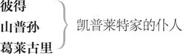
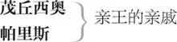

致辞者
罗密欧
蒙太古， 罗密欧之父
蒙太古夫人， 罗密欧之母
班伏里奥， 蒙太古之侄
亚伯拉罕， 蒙太古的仆人
鲍尔萨泽， 罗密欧的仆人
朱丽叶
凯普莱特， 朱丽叶之父
凯普莱特夫人， 朱丽叶之母
朱丽叶奶妈
提伯尔特， 凯普莱特之内侄
凯普莱特族人
彼特鲁乔

乐师 数人
仆人 数人
维罗纳亲王 爱斯卡勒斯

帕里斯的侍童
茂丘西奥的侍童
劳伦斯神父
约翰神父
卖药人
吏役
市民 数人
巡官
巡丁 数人
*开场诗*
*［致辞者上］*
*致辞者 话说名都维罗纳，曾有两家
巨族豪门，论声望不分乙甲，
却是宿世冤家，今日又厮杀，
可怜双双公民手，平添血疤。
运命作耍，两家世仇偏生下
苦命鸳鸯，英年自尽在墓闼。
凄惨惨去也，一曲殉情悲歌，
终换来，交恶双亲和解佳话。
叹双方父母多少年来雷霆斗，
只可惜斗不掉重重恨锁仇枷，
到头来却只灭掉了自家亲娃。
这段伤情遂演成今日台上戏。
看客宽心，大意如今已说罢，
因由细节，还请静听慢品察。*
*［下］*
第一幕
第一场 ／ 第一景
维罗纳一公众场所
凯普莱特家的仆人山普孙与葛莱古里各执盾剑上
山普孙 葛莱古里，听我说，我们不要像煤贩子 1 那样倒霉了。
葛莱古里 那当然，那样的话，咱们跟没饭吃（煤贩子）一样倒霉。
山普孙 我是说，我们要是让煤气（霉气）惹火了，就亮出家伙来。
葛莱古里 对了，趁你小命还在，把你那霉脖子拉出领口吧。
山普孙 我一旦冲动起来，我的冲刺 2 动作可快了。
葛莱古里 问题是你很难冲动，所以你的冲刺快不起来。
山普孙 蒙太古家里的狗就会让我冲动起来。
葛莱古里 冲动就必须动来动去，是好汉就挺起别动。你既然都动来动去了，那就说明你落荒而逃了。
山普孙 蒙太古家里的狗就会使我挺立不动。我要靠着墙壁占尽上风，占尽他家男男女女的便宜。
葛莱古里 那只显得你这无赖软里吧唧的，因为最软的家伙总是碰壁的。
山普孙 说得是。所以，软里吧唧的女人总是被人靠着墙壁刺进去。我要让他家的男人远离墙边，我要把他家的女人靠着墙壁刺进去。
葛莱古里 这场争端只是咱两家主人和两家男仆之间的事嘛。
山普孙 我看横竖一样。和男人们干仗时，我要当一个大暴君；和娘儿们干仗时，我要文质彬彬。我要把她们的脑袋都砍下来。
葛莱古里 娘儿们的脑袋吗？
山普孙 对，娘儿们的脑袋，或者叫处女袋，随你感觉是怎样就怎样。
葛莱古里 她们肯定会感觉到滋味啰。
山普孙 只要我勃然挺立，她们一定会感觉到我的滋味。谁都知道我这块横肉有多棒。
葛莱古里 亏得你那不是一块鱼肉，否则你那玩意儿便像是一根儿瘪腌鱼了。
掏出你那根家伙来；蒙太古家的人来啦。
另两个仆人［亚伯拉罕与鲍尔萨泽］上
山普孙拔剑
山普孙 我已经把我这根家伙赤裸裸地拔出来啦；你去跟他们吵，我在背后跟你顶上。
葛莱古里 怎么？你想溜之大吉吗？
山普孙 我才不是那种人。
葛莱古里 哼哼，恐怕你就是那种人！
山普孙 让他们先动手，这样咱们就把理占住了。
葛莱古里 我走过去向他们横眉楞眼的，瞧他们敢怎的。
皱眉
山普孙 好，瞧他们敢怎的。我要向他们咬我的大拇指，瞧他们能不能忍受这样的耻辱。
咬大拇指
亚伯拉罕 老兄，你是在向我们咬大拇指吗？
山普孙 老弟，我是在咬我的大拇指。
亚伯拉罕 老兄，你是在向我们咬大拇指吗？
山普孙 要是我说“是”，我们占得住理吗？
旁白
葛莱古里 占不住。
山普孙 不，老弟，我不是向你们咬我的大拇指；我只是咬我的大拇指。
葛莱古里 老弟，你是想惹是生非吧？
亚伯拉罕 惹是生非？不，老兄。
山普孙 你要是想惹是生非，那我可以奉陪；论实力咱俩可是棋逢对手。
亚伯拉罕 不比我强一点？
山普孙 老弟，这个嘛，呃，嗯。
班伏里奥上
葛莱古里 说“强一点”——我家老爷的一位亲戚来了。
旁白
山普孙 强一点点。
亚伯拉罕 说谎。
山普孙 是汉子就拔剑。葛莱古里，别忘了你的绝招。
两人相斗
班伏里奥 分开，蠢材！收起你们的剑，不明事理的家伙。
拔剑分开两人
提伯尔特上
提伯尔特 怎么！居然跟这些怯懦的奴才都动刀动剑？
转过来，班伏里奥，让我送你上西天。
拔剑
班伏里奥 我是在劝和；把剑收起来，
或者用它把这些家伙分开。
提伯尔特 什么！都亮剑了，还说劝和？我恨死你这“和”字，
就像我恨地狱，恨所有蒙太古家的人和你。
看剑，懦夫！
相斗
三四市民执棍上
吏役 操棍的，拿棒的，持矛的！狠狠打！打倒他们！打倒凯普莱特家人！打倒蒙太古家人！
穿着长袍的老凯普莱特与凯普莱特夫人上
凯普莱特 什么事这么吵闹？取我的长剑！快！
凯普莱特夫人 拿拐杖，拿拐杖！取剑干什么？
凯普莱特 取剑来，听见吗！来的是蒙太古老贼；
对我舞刀弄剑，耀武扬威。
老蒙太古与蒙太古夫人上
蒙太古 凯普莱特，你这老贼！——别拉住我，放开我。
蒙太古夫人 你要去寻仇，我偏不让你走。
爱斯卡勒斯亲王及扈从上
亲王 目无法纪、搅扰治安，一帮乱民，
本是乡邻却让刀剑蒙耻染上血腥——
嘿！那边的，还敢不听？听着！
尔等畜生，只为浇熄心中恨火，
竟任凭，血管中紫血脱管喷淋；
不想以身试法者，速将杀人凶器
抛掷于地，使血手远离纠纷，
静听震怒人君，宣示裁判公平。
三番市民械斗，竟只为一句空言，
老凯普莱特和老蒙太古，你们竟
三次扰乱，本镇街道安宁，
就连久居维罗纳之年老百姓，
亦脱下尊严装束，用苍枯于和平
年代之双手舞动老旧枪矛，
缠身于你们溃烂之仇恨。
你们若再敢在街市上滋事寻衅，
我就要判你们扰乱治安，赔上老命。
现在而今，各色人等统统退下；
你，凯普莱特，须随我前行；
你，蒙太古，今日下午到自由镇，
你们都须出席该处审判庭，
听候本王对此案宣判。众人散开！
胆敢抗命不遵，一律格杀勿论！
众人下。［蒙太古夫妇与班伏里奥留场］
蒙太古 是谁让这一场宿怨重起纷争？
侄儿，说，事发现场有你一份？
班伏里奥 我来之前，您的和您仇家的仆人
早已在这里打斗得难解难分。
我正拔剑分开二人之际，却见
脾气火爆的提伯尔特执剑亲临。
他在我耳边咋咋呼呼，又把宝剑
在他自己头上乱舞，嗖嗖剑风不伤人，
却似对他发出嘲弄的笑声。
我们刀来剑往，大战了许多回合，
参战者渐众，各为其主大交兵，
直至亲王驾到，方才喝退双方暴民。
蒙太古夫人 啊，罗密欧呢？你今日可曾见过他？
这场厮杀他没参与，真叫我感到高兴。
班伏里奥 夫人，当人人景仰的红日
离探头于东方的金色窗棂
尚有半个时辰，我心烦意乱，
信步外出，路过城西枫树林，
正好看见令郎罗密欧
早就在那儿走走停停。
我向他靠近，可一见我身影，
他就躲进深深的密林。
我当时以己之心猜度他心，
因为我自己也十分郁闷，
只想把人迹罕至的处所找寻，
便只顾自己心境，不管他的心情，
凡避我者我也乐得和他各走迷津。
蒙太古 有多少个清晨，有人曾见他的身影
在此对清新晨露添加上他的泪痕，
叹息声声，宛若长空新绕云雾层层；
可是一等到那使万象苏生的红日
在远达东方的天际渐渐初升，
拉开黎明女神床上阴暗的帷幕，
我那忧郁的儿子就避开光明，
潜回到家中；独自深居简出，
门窗紧锁，偏不与韶光为邻，
只为自己造成一个人工的黑夜。
他这样的脾气必不是一件好事情，
除非有良计良策可铲除这病根。
班伏里奥 好伯父，您可知悉那病根是甚？
蒙太古 不知，也没法从他嘴里探听。
班伏里奥 您可曾设法向他反复问询？
蒙太古 问过啊，连许多朋友都操心，
可他自己对自己的私情——
我不好说究竟有多深——
却自始至终守口如瓶，
别人休想靠旁敲侧击了解内因，
这就好像一朵蓓蕾初生，
尚未迎风展蕊奉献出娇艳 3 ，
就被妒忌之虫夺去了生命。
我们一旦能知道他哀从何来，
自会找到良药治愈他的病根。
罗密欧上
班伏里奥 瞧，他来了；二位暂且回避，
我去问问，看能否探出他的隐情。
蒙太古 但愿你运气好，和他独处时能听到他
吐露真心。——好，我们离开吧，夫人。
［蒙太古夫妇］下
班伏里奥 早安，老兄。
罗密欧 现在还算早吗？
班伏里奥 时钟才敲九点嘛。
罗密欧 唉！心有愁思日月长啊。
刚才匆忙而去的是我父亲吧？
班伏里奥 正是。何种愁思拉长了罗密欧的日月？
罗密欧 愁不能获得可使光阴变短的东西。
班伏里奥 跌进情网了吗？
罗密欧 跌出来了——
班伏里奥 出了情网？
罗密欧 出了她的芳心——我对她徒怀痴念啊！
班伏里奥 唉！没想到爱神表面文质彬彬，
实际上却如此残暴无情！
罗密欧 唉！想不到爱神虽然总是蒙着眼睛 4 ，
不用双目，却会把大小道路看个分明！
我们在哪里用餐？哟！这里有过纷争？
不过，别告诉我，其实我早就知道内情。
打斗多出于恨，但更多却出于爱。
爱，爱得天翻地覆；恨，恨得骨肉情深！
啊，一切事物原本是无中生有！
啊，沉重的轻浮，正经的愚蠢，
表面的齐整，混乱的变形，
铅羽，明雾，冷的焰火，病的康宁，
名为睡眠，实则是永远的清醒！
我感觉这是爱，可里面却没有情。
你不会笑我吗？
班伏里奥 不，兄弟，我真想热泪涕零。
罗密欧 好人啊，哭什么呢？
班伏里奥 哭你的善心受到如此的欺凌。
罗密欧 唉！这就是爱情误入迷津，
愁肠百结重压在我心庭，
蒙你感同身受，你的悲情
在我太多的忧愁之上再加上
一重愁怨，只令我愁绪倍增。
爱情是声声叹息卷起的烟雾，
烟雾一散，情人眼中便剩下火星；
恋情受阻，便只见滔滔泪海波横。
还有何辞可喻？最疯狂却又最审慎，
苦，苦到喉哽；甜，甜到钻心。
啊，再见，老兄。
班伏里奥 慢，我要跟你在一起；
你要是这样离开我，是对我不敬。
罗密欧 嘿！我自己都丢了；我不在这儿；
我不是罗密欧，罗已在他方别境。
班伏里奥 老实告诉我，你所爱的是谁？
罗密欧 什么！我必得用呻吟说出她的芳名？
班伏里奥 呻吟？不，你只要实话实说就成。
罗密欧 那就是让病人把遗嘱庄严地制定：
对病重者，这个字眼太让人痛心。
老实说，兄弟，我真爱上了一个女人。
班伏里奥 我就猜你堕入情网了，一猜一个准。
罗密欧 好准的射手！我的意中人又美又俊。
班伏里奥 老兄，靶子越显眼，越易射中靶心。
罗密欧 可你这就射偏了。用丘比特的箭
射不中她的芳心；犹如狄安娜女神，
她既聪慧又有坚固的贞操护身，
爱情的软弓柔矢休想攻破她的心门。
她绝不屈服于甜言蜜语的围攻，
也不让诱惑的目光对她肆意横行，
她守身若玉，纵面对败坏了圣贤的黄金。
啊！她的美貌便是巨富，只可惜
她一旦消殒，那美貌终归要化作微尘！
班伏里奥 那么她可曾立誓不嫁、永葆童贞？
罗密欧 可不是吗？为节俭自珍却造成天大浪费；
自我糟蹋，真不知饿煞美色几分，
只可怜那娇姿丽态，终将断子绝孙。
她是太聪明太美、美得太聪明，
她倒是祈福有望，我只能抱恨终生。
她发誓断情弃爱，重誓旦旦，
令我生而犹死，虽尚能徒诉衷情。
班伏里奥 你且听我忠言，别再将她挂在痴心。
罗密欧 啊！那你就教教我忘记的本领。
班伏里奥 你可以让你的眼睛自由放任，
随意地打量别的美人。
罗密欧 这个法门
只让我更感到她美，别人无法比并。
那紧贴美人前额的幸运面罩，正因其黑，
常使我们揣想它遮掩的必定是绝色丽人。
突然失明的人永远不会忘记
那消失的视觉中留下的宝贵倩影。
你纵使给我引见一位绝世佳人，
她的美只是对我把另一个更美者
提醒，此外还有何用处于我可心？
再见，你不能教给我忘情的本领。
班伏里奥 我一定证明这奇招灵验，否则欠你终身。
同下
第二场 ／ 第二景
维罗纳一公众场所
凯普莱特、帕里斯伯爵与丑角［一仆人］上
凯普莱特 蒙太古和我已保证两家不再争强，
一旦违法，同受严惩。我想，
我们都已老迈，不难保持和平安祥。
帕里斯 你们两家原本是高门望族，
只可惜一朝结怨，世代刀枪。
嘿，对在下求亲，您老作何感想？
凯普莱特 老汉的意思早已细说端详：
小女不谙世事，未经沧桑，
而今犹未度尽十四年寒来暑往，
再过两个夏天，两度花开花落，
始可言小女成熟，堪作新娘。
帕里斯 比她年幼者早已喜抱儿郎。
凯普莱特 过早的成熟易有过早的灾殃。
我所有的子女都已深埋黄土，
只剩下她成为我唯一的希望。
不过，好帕里斯，求爱就求爱吧，
占取她的心房；只要她看得上，
我同意与否，只是小事一桩。
在她的选择圈子里，只要她点头，
我都会乐于同意好事成双。
今日晚上，我将循旧例让宴会开场，
三朋六友，都在我的请客单上，
您也是其中之一，如蒙屈尊俯临，
无任欢迎，必使我蓬荜生光。
今夜寒舍，您可见群星翩然下降，
将黢黑乾坤点缀成明亮的天堂。
当盛装的四月追随残冬足迹而至，
情欲勃发的年轻人顿觉乐也无央。
舞会今宵，丽葩初放，您将有同样
拥花近月的快乐：看个饱，听个够，
选一个最好的意中人在心中细斟暗赏，
待览遍群芳，重顾其中的老汉小女，
或觉其聊充人数，鉴察之下一无所长。
来，跟我来。——去！走遍这繁华维罗纳，
对仆人
按这名单竭诚邀请所有贵宾来访，
递过一名单
就说寒舍今夜当虚席以待，
诚望诸位莅临赏光。
［凯普莱特与帕里斯］下
仆人 按这名单上写的姓名去邀请他们！上面写的啥？我看写的是：鞋匠玩尺子，裁缝耍楦头，渔夫弄铅笔，画师撒渔网。老爷却叫我按这名单上姓名去找人，我怎么知道这名单上都写着些什么姓名？——我一定得找个识字的人——好，来得好。
班伏里奥与罗密欧上
班伏里奥 嘿，兄弟，一火旺可压别火旺，
一处哀伤可减别处哀伤；
这边转晕了，就转反方向；
本是悲惨事，解愁另一桩。
让你的眼睛患上新眼疾，
你原来的旧眼毒便会消亡。
罗密欧 你的车前草叶倒是一剂良方。
班伏里奥 敢问，医治何病？
罗密欧 小腿擦伤。
班伏里奥 喂，罗密欧，莫非你已疯狂？
罗密欧 疯倒没疯，可已像疯子被人绑；
饮食隔绝，就像关押在牢房，
受够了皮鞭、棍棒——晚安，朋友！
仆人 老天爷，晚安！请问老爷，您识字吗？
罗密欧 唉，识得我不幸命运中的灾殃。
仆人 也许您不拿书本本都背得出来；但我想请问您一下，您能不能看见什么都念得出来？
罗密欧 是的，只要我认得的字，我就会念。
仆人 您说的倒是老实话；再见吧！
罗密欧 等等，伙计；我会看着念出来。
他读信
“玛丁诺先生暨夫人及诸位令嫒；安赛尔美伯爵及诸位令妹；寡居之维特鲁维奥夫人；帕拉森西奥先生及诸位令侄女；茂丘西奥及其令弟凡伦丁；凯普莱特叔父暨婶母及诸位贤妹；罗瑟琳贤侄女；里维娅；伐伦西奥先生及其令表弟提伯尔特；路西奥及活泼之海丽娜。”好一群名媛贤士！要请他们何往？
仆人 到——
罗密欧 哪里？晚餐？
仆人 到我们家去。
罗密欧 谁的家？
仆人 我主人的家。
罗密欧 不错，我本该先问你这个问题才是。
仆人 您不用问，我马上就告诉您。我家主人就是那个家产万贯的凯普莱特；
您要不是蒙太古家里的人，也请您来喝一杯酒，祝您一生快乐！
下
班伏里奥 凯普莱特家此种盛宴源远流长，
你热恋之美人儿罗瑟琳也要前往，
与维罗纳城的所有名媛同去晚宴；
你也去吧，去，用不带成见的目光，
将她的容貌跟我指出的某位比比，
你就顿悟你的天鹅原本是乌鸦相。
罗密欧 假如我这敬奉神明的眼睛会有假象
产生其中，那就让我的泪水变为大火，
把这悲泪长流淹而不死的眼珠烧个精光，
因为它们是叛徒，显得透明却在撒谎！ 5
比我的所爱还美！呸！烛照万象的太阳
开天辟地以来便见证我的所爱美色无双！
班伏里奥 唉！你看她美，是因为没别人在她身旁，
你左眼右眼只拿她自个儿与自个儿比量；
今夜之宴会就将有一位光彩照人的姑娘，
我会指示给你，让她和你心中的偶像
同比于水晶天平，你将看到你的所爱
现在貌似绝色佳人，届时必黯淡无光。
罗密欧 我欲赴宴，非为亲睹你所说的艳景红芳，
我只要欣然观看我自己的所爱大放光芒。
［同下］
第三场 ／ 第三景
维罗纳，凯普莱特家
凯普莱特夫人与奶妈上
凯普莱特夫人 奶妈，我女儿呢？叫她来这里一下。
奶妈 我敢发誓，以我十二岁童贞做抵押：
我真叫过她。嘿，小绵羊！嘿，小骚货！ 6
嘘，上帝宽恕！这孩子去哪儿啦？嘿，朱丽叶呀！
朱丽叶上
朱丽叶 什么事？谁叫我？
奶妈 你母亲叫你。
朱丽叶 母亲，我来啦。您要对我说什么话？
凯普莱特夫人 有一件事情。——奶妈，你先出去一下，
我们要谈些私房话。——回来，奶妈，
我想起来啦，我们的话，你听听无妨；
你知道，我女儿年纪，也算不小啦。
奶妈 可不是吗？我可按钟点算出她年龄有多大。
凯普莱特夫人 她还不满十四岁。
奶妈 我打赌，用我的十四颗牙齿——唉，说来伤惨，我只剩四颗啦！——
她还真没满十四岁呢。现在离收获节 7 还有多少天？
凯普莱特夫人 两周多一点吧。
奶妈 管它两周多一点还是少一点，反正一年三百六十五天，一到收获节的晚上，她就满十四岁了。苏珊 8 跟她同年——上帝让一切基督徒的灵魂安息吧！唉！苏珊是到了上帝那儿啦，她太好了，我不配有她这孩子啊。我可是说过啦，一到收获节晚上，她就满十四岁啦；真的，是十四，我记得可清楚啦。打闹地震那一年算起，到现在该是十一年啦；那时候她刚断奶——我一辈子忘不了——一年三百六十五天，不早不迟，刚巧就在那一天；那时我用苦艾叶涂了奶头，靠着鸽棚墙壁坐着晒太阳；老爷和您那时候还在曼托瓦 9 ——瞧，我这脑子还真不赖——可就像我说的，这小东西尝到我奶头上涂的艾叶，觉得味道苦，这可爱的小傻瓜！嘿，她大发脾气，把奶头一甩！“砰！”靠在我身后的鸽棚立刻地动山摇。这阵势，不赶我走，我自己就知道该走人啦 10 。打那年算起，一晃十一年啦；那时她就可以自个儿站起来，不，我对天发誓，不光站起来，她还能摇摇摆摆地到处跑了。就在那时的前一天，她把前额跌破了。于是我家男人——上帝保佑他！他是个喜欢打趣的人——把这孩子抱起来。“哟！”他说，“你面朝下扑倒在地了？等你更懂事的时候，你就要面朝上往下倒了 11 ；是不是呀，朱丽？”哎呀天王老子啊，这个可爱的鬼东西突然不哭了，回答说：“是。”您瞧您瞧，如今这玩笑还真的要弄假成真了！我向您保证，我就是活到一千岁，也忘不了这句话。“是不是呀，朱丽？”他问；这可爱的小傻瓜突然不哭了，回答说：“是。” 12
凯普莱特夫人 行了，行了，我求求你，别再说了。
奶妈 是，太太。可我一想到这小东西居然停止哭泣，回答说“是”，我就禁不住要笑。我跟您实话实说，她额头上摔了个大青包，大得像小公鸡的鸡巴；这一跤跌得可真够惨的，她大哭起来。“哟！”我男人说，“你面朝下扑倒在地了？等你长大的时候，你就要面朝上往下倒了；是不是呀，朱丽？”
她竟停住了哭声，说“是”。
朱丽叶 我说，奶妈，你也该停下来了。求你了。
奶妈 好，不说啦，不说啦。上帝保佑你！你是我奶大的最可爱的小宝贝；我只要能够活到亲眼看见你嫁出去，就心满意足啦。
凯普莱特夫人 是呀，我正是要谈谈给她找婆家。
朱丽叶，我的好孩子，告诉妈，
你觉得如何，若我要让你出嫁？
朱丽叶 嫁期问题 13 我做梦都不去管它。
奶妈 嫁期问题！假如我不是你唯一的奶妈，我一定要说你的聪明是从奶头上吸来的。
凯普莱特夫人 唉，该想想出嫁问题啦。瞧这维罗纳，
比你年轻的千金小姐，多已抱上了娃娃。
就拿我自己来说吧，当年我还是
你这样的闺女，便早已是你的妈妈。
我直接说吧：少年英俊的帕里斯
已经来向你求婚啦。
奶妈 是位真汉子，小姐！这样的男人，小姐，真是普天之下——嘿！他简直就是美男子标本。
凯普莱特夫人 维罗纳的夏天开不出这么美的花。
奶妈 可不是嘛，他是一朵花，真的，就是一朵花。
凯普莱特夫人 你说怎样？你能不能喜欢这个有情郎？
今晚你就会看见他出现在咱家宴会上。
帕里斯年轻的脸膛是一册书卷，
其中有生花妙笔带给你快乐无疆；
你且仔细鉴察那脸上的根根线条，
是如何相互交织成动人的华章；
若这精美的册籍中尚有难懂的晦涩，
那他那眼角眉梢会闪现阐释的光芒。
这是本爱的经典，是缺乏羁束的情郎 14 ，
要让他尽善尽美，只消一幅封面装潢；
江海的围困反让鱼儿逍遥自在，
美妙的外表衬托出内美的辉煌。
在众人的眼里，赞美理属华丽的包装 15 ，
黄金的内容本需要黄金的饰扣 16 锁藏。
所以，你要像封面把他的一切分享，
你拥有他，你自己绝不会缩小分量。
奶妈 缩小？不！胀大了；女人是男人搞大的。
凯普莱特夫人 就回我一句话，你中意帕里斯的求爱吗？
朱丽叶 如果瞅着不赖，那我就努力去欣赏，
但女儿如箭秋波的力道该有多强，
还须母亲首肯并加以掂量。
一仆人上
仆人 太太，客人都已到齐，饭菜都准备好了，请您跟小姐快去。厨房里的人都在骂奶妈的不是，什么都乱套了。我要去侍候客人啦；请您们快去吧。
下
凯普莱特夫人 我们这就来。——朱丽叶，那伯爵 17 正在等候。
奶妈 去，孩子，快去寻觅销魂缠绵的良宵美昼。
众人下
第四场 ／ 第四景
凯普莱特家附近；后移入室内
罗密欧、茂丘西奥、班伏里奥及五六人或戴假面或执火把上
罗密欧 嘿！我们就拿这番话作为进门的借口 18 ，
或者旁若无人而入，根本不去管应酬？
班伏里奥 如今已不时兴这一套老讲究。
我们不需要丘比特蒙住眼球，
也不需有鞑靼人的画弓在手，
稻草人一般，只为恐吓女流。
随他们把我们看作什么人，
我们只要跳完一场舞就走。
罗密欧 把火把给我，我讨厌舞场作秀 19 。
阴暗沉郁的我需光明朗照心头。
茂丘西奥 不，我们一定得让你跳，好罗密欧。
罗密欧 不，我跳不动。你们脚穿舞鞋，
我却魂如铅重，你们脚步轻悠，
我却被重压在地，寸步难得自由。
茂丘西奥 你既是恋人，自可借丘比特之翅，
腾飞直上，远远高过舞厅同俦。
罗密欧 痛苦啊，我已被他的羽箭穿透，
再难借其轻翅高翔，我被困住，
纵然蹦跳，亦难解脱叠叠悲愁；
我陷落了，爱的担子重若山丘。
茂丘西奥 你若深陷其内，恐压坏爱的娇体，
你若柔软无力，恐让爱失望成愁。 20
罗密欧 爱是柔软的吗？它是太粗、太横、
插起来像荆针，气昂昂、雄赳赳。 21
茂丘西奥 要是爱对你来硬的，你就以硬和它磨斗；
你自己动手收拾它，叫它昂头变成垂头。 22
给我一个套子，我要把圆脸蛋塞进去；
面具怪怪正配脸蛋丑丑！何必担忧
猎奇的目光看见我这形态奇陋？
戴上假面
反正有这假面的红眉替我害羞 23 。
班伏里奥 来，敲门，进去；大家一旦
进了门，就又动腿儿又动手 24 。
罗密欧 给我火把。那些心怀淫念的浪荡子
可尽情用脚跟把无情草儿 25 挑逗，
我却愿用一句老话表我心绪：
愿似蜡烛台，旁观赌技优； 26
戏到高潮处，合当离戏楼。 27
茂丘西奥 呸！娄、娄鼠而已，是警察爱说的“嘘” 28 ，
你这是褐马陷泥沼 29 ，单赖我等把你救，
恕我直言——爱的泥淖已到你耳根后。
唉，拽你出来，真是昼点夜灯白费油！
罗密欧 嘿，你这比喻有点馊。
茂丘西奥 兄台，我的意思是，我们徒劳地拿着火把
磨蹭、浪费光阴，就好比点灯于白昼。
你要知我本意，好想法要理智生成，
用理智比用五官还要五倍地优秀。 30
罗密欧 参加这舞会我们原本用心良好，
但真进去了，只怕后果堪忧。
茂丘西奥 敢问竟是为何？
罗密欧 昨夜晚我曾梦乡一游。
茂丘西奥 我也曾做梦来着。
罗密欧 是吗，敢问竟是何梦？
茂丘西奥 我梦见做梦者谎话不休。
罗密欧 眠床之上，做梦者还真可以梦见真事。
茂丘西奥 哦，那我梦见麦布女王 31 曾和你邂逅，
她曾同精灵们共煽起睡者的梦幻悠悠； 32
她来也，身子最大不过像一颗
玛瑙石戴在市政大员的食指指头。
蝼蚁大小的马匹拖曳着她的车子，
凌越过酣睡者们的鼻梁鼻沟。
她的车辐是蜘蛛的长脚做成，
她的车篷是蚱蜢的翅膀架构；
挽索是极细极细的蛛丝之缕，
马轭是束束如水的月色幽幽；
鞭绳是游丝，鞭柄是蟋蟀骨头；
她的车夫是灰色的小小蚊虫，
小得不如从懒丫头的指缝沟
抠出的懒虫 33 的一半。她的车辇
不过是用一个空榛子壳造就，
松鼠或蛀虫是一批巧匠能工，
专为精灵造车，历时可谓古久。
就这样，麦布女王夜夜驱车驰骤，
若历情人之脑，则令其梦绕情稠；
若历官员膝盖，则令其梦里卑躬；
若历律师手指，则令其梦讨讼酬；
若历女士嘴唇，则令其梦吻不休，
可发怒女王也让她们嘴上长疮，
因为她厌恶女士口中的糖果味臭。
有时她经过一位廷臣的鼻子，
他就会梦见有机会因公揩油；
她会从献给教会的猪身上取下猪尾，
撩拨牧师之鼻，趁他在梦乡悠游，
于是牧师便梦见又一份俸禄入兜；
有时她驰过一位军人的脖子，
他就会梦见挥刀直破外敌的咽喉，
梦见工事隳残、伏击、剑刃刀钩 34 、
巨觥交错之痛饮，俄而战鼓频奏，
他便闻声从梦中倏然惊起，
乱吐出三两句祷词或诅咒，
翻个身，沉沉复往梦乡游。
正是这女王半夜里编鬣成辫，
把懒女人龌龊乱发烘成团球，
若将其梳顺，转眼祸事临头； 35
正是这婆子在女孩仰睡的时候，
压在她们的娇身，教会她们承受，
要做女人，就得会生育会交媾，
就是她——
罗密欧 闭嘴吧，茂丘西奥，别说啦！
你就会胡诌什么阳洞阴沟 36 。
茂丘西奥 不错。我诌的是各种各样的梦，
梦本来是闲汉脑子幻想的丰收，
它只是空虚，只是无益的乌有，
它本质稀薄如同缥缈的空气，
它变化莫测，如同旋风气流，
适才还向冰封北际暗送秋波，
忽然恼恨之心乍起，情怀别投，
扭过脸儿甘向雨露南方入彀。
班伏里奥 你这阵风话吹得我们漂泊无依，
晚饭已过，我们来得太迟太后。
罗密欧 我却怕来得太早，总觉得冥冥中
有种悬而未决的命运难以猜透，
今夜虽始于狂欢，但哀愁
与恐怖的时日将接踵于后，
我这充满怨悱多舛的命途，
或将横遭不幸而英年夭寿。
啊，主宰我前程的上帝指引我
行动吧！走，寻欢作乐的朋友！
班伏里奥 来，擂鼓。
他们绕台而行。众仆人执餐巾上
仆从［长］上
仆从长 卜得潘呢？他怎么不来帮着收拾餐桌？他搬过一个木盆没有？他擦过一个木盆没有？
仆人甲 光靠一两个手都顾不得洗的人来负责餐桌上的排场，那还不乱套！！
仆从长 把这些折叠凳子拿走，把橱柜挪开，小心银器。好伙计，给我留一块杏仁酥；你要是瞧得起我，就吩咐管门的放苏珊跟耐尔进来吧。——安东尼！卜得潘！
仆人乙 嘿，老兄，我在。
仆从长 大厅里到处都在找你，叫你，问你，寻你。
仆人甲 我们没有分身术啊。嘿，伙计们，振作点，打起精神！谁命最后绝，谁就得一切。 37
［若干仆人］下
众宾客及女士上，与戴假面者相遇
凯普莱特 先生们，欢迎欢迎！所有的女士们
只要脚底没鸡眼，都将和你们跳一轮。
啊哈！小姐们啊，你们中间还有谁
现在没有跳舞心？我，对天发誓，
谁是扭捏推脱者，必是脚有鸡眼人。
怎样，我说中了？诸位先生，欢迎！
当年我也曾戴假面对美女咬耳根，
说尽了甜言蜜语来奉承；
唉，去也，去也无声。
先生们，欢迎！来，乐师们，让音乐齐鸣。
奏乐，众人跳舞
闪开！腾出舞厅！跳起来吧，姑娘们。
光，光再亮一点，这奴才，搬开桌凳，
把火炉熄了，这房间真是太热啦。
啊，好老弟！真没想到您也光临。
不！坐吧，不！坐吧，凯普莱特兄弟，
您我两人早已过了跳舞的年龄；
自从上次我们戴着假面跳舞，已经
过了多少年份？
凯普莱特族人 唉，圣母在上，有三十年啦。
凯普莱特 什么，兄弟！没这么久，没这么久；
记得吗，那年结婚的，是路森修，
顶多是在五旬节前后，大概
二十五年啦，那时还用假面罩头。
凯普莱特族人 不止，不止；他儿子也比这年岁大；
他儿子都三十岁啦。
凯普莱特 瞧您说哪去啦？
两年前他儿子还有监护人哩。
罗密欧 挽着那位骑士之手的小姐究竟是谁？
对一仆人
仆人 无可奉告，先生。
罗密欧 啊！火把从她学得明亮辉煌，
她似明珠悬坠于夜幕 38 边上，
像非洲黑女孩耳畔的珠宝；
太美不敢用，太贵世无双！
似鸽立鸦群晶莹如同白雪，
有女伴如云簇拥在她身旁，
一曲舞罢我必留心其所在，
试伸尘手碰触这玉手娇娘。
此心曾有真爱？呸！目盲盲。
只今夜才睹绝世佳人在此乡！
提伯尔特 听声音，这是蒙太古家来的人。
跟班，取我剑来。——哼！真狂妄，
［一仆人下］
这奴才竟敢套着鬼脸闯我厅堂，
莫非想来嘲笑我家的盛大舞会？
为确保我凯普莱特家族的荣光，
割了他头颅，我看也不算罪状。
凯普莱特 嘿，侄儿！为何如此怒满胸腔？
提伯尔特 叔父，这是我们蒙太古家的仇敌；
这奸贼今晚到此，必定存心不良，
无非是要取笑我们的舞场。
凯普莱特 莫非是罗密欧那小子吗？
提伯尔特 没错，正是罗密欧那个流氓。
凯普莱特 消消气，好侄儿，别管他吧。
他看起来倒是有一副君子相；
实话说，维罗纳人都在夸奖，
夸奖他教养深厚，品德端庄。
你就是给我全城的金银财宝，
我也不愿在家和他把事弄僵。
你最好平心静气，别和他闹。
此乃我意，你若认我是尊长，
便该和颜悦色，舒展恨眉，
收起怒相，休坏了宴会风光。
提伯尔特 怒相，该！让如此恶棍为宾，
我咽不下怒满胸膛。
凯普莱特 咽不下也得咽；哼，你这小子，
目无尊长！我说，休和他争强，
哼！谁是一家之主？你还是我？
哼！你咽不下怒满胸膛！老天在上，
你真要当着我的客人把我违抗？
你要造反啦？想充老大独霸一方？
提伯尔特 唉，叔父，这真是奇耻大辱啊。
凯普莱特 得啦，得啦，
你这个狂妄之徒。难道不是这样？
瞎折腾只会自戕自伤，我跟你打赌。
你偏唱反调！嘿，可真会挑好时光。——
真棒，诸位 39 ！——你真是任性鲁莽；
对跳舞宾客/对提伯尔特
给我闭嘴，不然——灯，还要更亮！——
对众仆人
不害臊啊！给我闭嘴。——嘿！诸位，上！
对提伯尔特/对跳舞宾客
提伯尔特 忍气吞声强压下这怒满胸膛，
气得我浑身战栗如同筛糠。
我且抽身，暂容这小子冒进擅闯，
教他甜在今日，来日必把苦头尝。
下
罗密欧 倘若我这卑贱无比的手掌亵渎了
对朱丽叶
你神圣的殿堂 40 ，我尚有赎罪良方：
我且用这双唇，这对赧颜的香客，
奉上轻吻，安抚那粗鲁的轻狂。
朱丽叶 好信徒，莫过分怪罪你的手掌，
它这样表示虔诚，理所应当；
圣徒的手儿本容许信徒磕碰，
掌心相合与信徒的亲吻同芳。
罗密欧 圣徒与信徒岂不空长了双唇？
朱丽叶 啊，信徒，那本是用来祈祷上苍。
罗密欧 啊，圣徒，那就让这双唇求您开恩，
以唇代手，免使得希望变成绝望。
朱丽叶 圣徒有求必应，但不会屈尊就香。
罗密欧 那您就勿动玉体，请容我领受恩祥，
借您的朱唇，把我唇间的罪孽洗荡。
亲吻她
朱丽叶 但你唇间的罪过便到我的唇上隐藏。
罗密欧 我唇间的罪过？啊，您这怨愤真棒！
那就让这罪过回到老地方。
再吻她
朱丽叶 你接吻的理由还真是堂皇。 41
奶妈 小姐，您母亲有事和您商量。
朱丽叶退至一旁
罗密欧 她母亲是什么人？
奶妈 少爷，我给您讲，
这府上的太太就是她母亲，
好太太啊，又聪慧，又贤良；
她女儿刚和您说过话，曾由我抚养；
我给您讲，谁要把她搞到手，
那才是金银财宝响叮当。
罗密欧 她是凯普莱特家里的人吗？
旁白？
天！我这命从此只还冤家账！
班伏里奥 走吧，走吧，戏到高潮合当离场。
上前
罗密欧 唉，只怕离了好戏院，更入烦恼乡。
凯普莱特 不，诸位先生，请别忙着要走，
众宾客表现出非走不可
我们还略备夜宵好让诸位品尝。
真这么晚啦？好吧，那恭谢诸位；
各位高朋，谢谢，祝晚梦馨香！——
多拿几个火把！——好，我们也就寝吧。
对众仆人
啊，说真的！还真已更深夜凉。
我也休息了，上床。
［除朱丽叶与奶妈外众人下］
朱丽叶 过来，奶妈。那边的绅士是谁？
奶妈 提伯里奥那老头的儿子和继承人。
朱丽叶 现在出门的那个人是谁？
奶妈 呃，我想是年轻的彼特鲁乔。
朱丽叶 那个跟在人后却不肯跳舞的人是谁？
奶妈 我不认识。
朱丽叶 去问问他的名字。——要是他已婚配，
那么坟墓便成了我的婚房。
奶妈走过去
奶妈 他是蒙太古家的人，叫罗密欧，
是咱仇家的独生子。
回来
朱丽叶 平生只一爱，却爱上仇家儿郎，
相见太早不相识，相识又恨少时光！
阴差阳错，错生出我这畸形爱，
本该不共戴天，却偏偏爱断肝肠。
奶妈 你在嘟囔什么呢？你在嘟囔什么呢？
朱丽叶 刚才陪我跳舞的人
教会了我朗诵诗章。
幕内一人呼唤“朱丽叶！”
奶妈 就来，就来！
好，我们去吧；客人们都已走光。
同下
第二幕
致辞者［上］
致辞者 旧时痴爱今已葬冷墓荒丘，
新生柔情急着要候补闺楼；
那位让人舍命追逐的美女，
比之朱丽叶，美色黯然收。
罗密欧爱朱丽叶天姿绝色，
朱丽叶爱罗密欧英俊风流；
他诉相思苦，偏遇死对头；
她偷香饵爱，强吞钓鱼钩。
他无缘对新欢吐尽山海誓，
只怨有那难解的宿怨世仇。
她空有情怀千段，更无处
有机缘与新爱幽会对情眸。
但凭情火力，会面终可求；
极端困苦尽，苦尽乐无休。
［下］
第一场 ／ 第五景
凯普莱特家花园墙外；后移入花园
罗密欧独自上
罗密欧 心儿已失落此地，怎可离此前行？
回去，沉沉肉身，去找回失落的心灵 42 。
退至一旁
班伏里奥与茂丘西奥上
班伏里奥 罗密欧！罗密欧表弟！
茂丘西奥 他聪明得很，
必是溜回家睡觉去了，我敢肯定。
班伏里奥 他是往这边跑的，跳进了花园墙内。
好茂丘西奥，你得唤他几声。
茂丘西奥 岂止唤他，我还得对他施用咒语。
罗密欧！疯子！痴情汉！骚公子！
快现出原形，哪怕就像一声叹息！
快哼一点情诗，叫我满意满意；
快嗥叫“呜”，“爱”，然后“唉”，
快对维纳斯姑奶奶说点花言巧语，
快取个绰号送她的瞎眼的儿子，
这老小子丘比特 43 ，真是神弓盖世，
竟让国王爱上了一个叫花女 44 ！——
他没听见，不吭声，没动静；
旁白
这猴头装死 45 。看我用法术把他治——
出来！凭着罗瑟琳的双眼亮晶晶，
凭着她高高的前额、红红的嘴唇，
凭着她的嫩脚、直腿、颤动的腿根，
还有她那两条大腿夹住的部分，
我命令你立刻给我现出原形！
班伏里奥 他要是听见，一定会非常生气。
茂丘西奥 这才不会让他生气呢；要气他，
除非是我把别的什么人的鸡鸡
唤来昂首挺立在他情人的洞里，
直等她降伏它，使它垂头丧气。
这样做是有点不像话。我用咒语，
光明正大，虽用他的情人作名义，
无非想把他逗引出藏身之处而已。
班伏里奥 嘿，我看他是躲进了树丛里，
正在和湿里吧唧的黑夜厮混 46 ；
他那瞎眼爱只合在暗里折腾。
茂丘西奥 爱如果瞎了眼，就射不中靶心。
这当口他一定坐靠着欧楂树根，
巴望他的情人与那欧楂果同形 47 ，
姑娘们常窃笑地称之为“女阴”。——
啊，罗密欧，好想有那件阴器，
开口的屁屁，对准翘起的棍棍！ 48
罗密欧，晚安！我要上轮床 49 去，
你这草地床我可不会睡，太冷。——
嘿，我们该走啦？
班伏里奥 走吧，走吧，不必再劳神。
他本来就想躲，你找也白费劲。
［班伏里奥与茂丘西奥］下
罗密欧 从未受伤者才会讥笑伤痕。
上前
［朱丽叶自上方上］
嘘！是什么光穿透那边的窗棂？
看东边天际，朱丽叶就是旭日初升！
腾空吧，骄阳！去杀死那妒忌的月轮，
瞧她病态的面色有愁云笼罩，
只因你这女弟子比她美貌几分；
她既然如此善妒，你又何须对她
俯首听命，倒不如脱下她那惨绿色的
贞女道服，那只有蠢货才穿戴在身。
这才是我的女娇娘，啊！我的心爱！
啊，但愿她知道我对她一往情深！
她朱唇吐诉，言而无声：有何要紧？
反正她已眼露真情：对此我必须应答。
不，这样太鲁莽，她不是在对我传情。
浩浩天宇，有两颗最璀璨的明星，
因有事出行，特苦苦恳求她的眼睛
在它们回归前作为替身闪烁于空冥，
假若她眼变明星，那是怎样的情形？
她脸上的辉光会使天星顿然失色，
就像白昼吞灭了孤灯；长天缀眼
将会在太空中流溢出无限光明，
使百鸟振喉而歌，误以为黑夜已经消尽。
瞧！她那纤手托住香腮的模样多么迷人！
啊，我但愿是她那手上的一只手套，
便可趁机把佳人的香腮贴紧！
朱丽叶 唉！
罗密欧 她说话了。
旁白
啊！说下去，光明仙子！
今夜，您这般辉煌
如同长翅的天使，
凌空闪耀在我头上，
夜幕顿敛，下界万民惊畏的目光 50
注视瞻仰着您驾驭着白云悠悠
在浩荡空冥的胸怀缓缓徜徉。
朱丽叶 啊，罗密欧，罗密欧！为何是这名称？
快否认你的父姓，抛弃你的本名；
你纵然不肯，但只消发誓做我的爱人，
我便从此改变这凯普莱特之姓。
罗密欧 我是和她搭话，还是继续聆听？
旁白
朱丽叶 只有你的姓氏才是我的仇敌；
你即使不姓蒙太古，不也是你自身？
不姓蒙太古又有何患？它不是手脚，
不是手臂不是脸，不是身上任何部分。
啊！我求你换一个别的名称！
名称算什么？我们称玫瑰作玫瑰，
即使换了名，不也有同样的香味？
罗密欧若换了名，他那珍贵的完美
不也会安然无恙，毫无损毁？
罗密欧，抛弃你的姓名吧，
那种东西不属于你的根本，
你没这空名你获得我身心。
罗密欧 那我就听你的话得你的身心；
对朱丽叶
叫我一声爱，我便重新受洗命名；
从今以后，我就不再叫罗密欧。
朱丽叶 你是何人，胆敢借夜幕偷听，
闯进我秘密的心灵？
罗密欧 凭我这名姓
我无法告诉你我是何人。
女圣在上，我对我的名字怀恨在心，
因为它是你的仇敌；若书之于纸，
我一定让它碎骨粉身。
朱丽叶 你这舌头吐字尚不到一百，
我就辨识出了这声音：
罗密欧，蒙太古家人？
罗密欧 都不是，美人，要是你厌恶此名此姓。
朱丽叶 你怎么进来的，告诉我，来此何为？
园墙高峻，多么难于攀登；
想想你的身份，若我的家人
发现你的踪影，你岂能死里逃生！
罗密欧 凭借爱的轻翼我飞越高墙，
区区石垣焉能遮挡纯爱深深；
爱既敢爱，就敢为所欲为，
你的家人岂挡得住我爱的飞奔。
朱丽叶 他们若发现你，一定会取你性命。
罗密欧 唉！你眼中的雄威远胜他们
二十柄刀剑；你但能眼角传情，
我便如铁甲防身，何惧他们的仇恨？
朱丽叶 我绝不愿让他们发现你的踪影。
罗密欧 凭夜幕遮护，他们看不见我的身形。
只要你爱我，我宁肯他们知我在此；
与其得不到你的爱而苟延年命，
倒不如爽快地在仇人剑下亡生。
朱丽叶 你居然找到这儿，是谁的指引？
罗密欧 是爱神，仗着他的鼓动我才四处探询；
凭借了我的双眼，承蒙他指点迷津。
我虽然领航乏术，却也愿不避艰辛，
扬帆出海，找寻你这无价之宝，
哪怕你远在无边无际的天涯海滨。
朱丽叶 你知道，若非有黑夜作帘栊，
当此夜，你正亲聆我的心衷，
必看到我脸上飞来处女的羞红。
我真想循规蹈矩，说我刚才是言不
由衷。可是罢了，繁文缛节之风！
若真对我情深意浓？你须答：“浓”；
我情愿信你的话；可你的海誓山盟，
或恐是欺诈；人道，恋人们变节不忠，
天神却笑脸相容。温柔的罗密欧啊！
你要是真爱我，就坦言，开诚布公；
你若嫌我太快地就向你委身相从，
那我就皱眉，让拒绝显摆威风，让你
再来追求；否则我绝难以“不”相送。
英俊的蒙太古啊，我真是过分痴情，
或使你觉得我的言行是轻浮的举动；
可相信我，先生，我将向你证明，
我的真诚比故作矜持者的更加郑重。
我承认，我本该加倍地假作端庄，不料
你乘我不备，偷听到我心曲流溢胸中；
请原谅我，休将我看作是轻率相从，
休把我的承诺视为投怀送抱，
怪只怪天机不慎泄漏于夜空。
罗密欧 小姐，我发誓，凭着那天际月轮皎皎，
素辉如银，正染亮果园千树林梢——
朱丽叶 啊！起誓休对月轮，月无恒轮可靠，
月巡周天，阴晴圆缺，月月知多少；
指月为誓，只怕你情意变，楚暮秦朝。
罗密欧 那我以何起誓为好？
朱丽叶 何须起誓；
你若真有此心，证物自以贵体为妙，
我对君身，敬若神道仙曹 51 ，
你的话，我必信奉在心梢。
罗密欧 若是我出自深心的大爱——
朱丽叶 别，别起誓。我虽对你心有所属，
却不喜私订终身在此宵；
这太鲁莽、轻率，如雷霆电扫，
倏然轰哮，不等人道：“雷来了！”
即转眼似云灭烟消。晚安吧，好人儿！
这爱蕾初结，有夏日熏风吹撩，
他日邂逅，必绽出叶绿花娇。
晚安，晚安！愿我们两人的心儿
都变得同样恬甜美好。
罗密欧 啊！你就这样离去，不让我心满意足吗？
朱丽叶 你今夜还要如何满足呢？
罗密欧 你还没有和我交换海誓山盟。
朱丽叶 我已经不求而自献上深爱，
我但愿能重新表白这一片痴心。
罗密欧 你是想收回承诺？为什么？爱人。
朱丽叶 只为了慷慨地再献衷情。
我要的只是我现有的爱：
我的慷慨像大海浩渺无垠，
我的爱也海一样深，越给你
我越富有，两者无穷无尽。
里面有人叫我；亲爱的，再会吧！——
幕内［奶妈］呼唤
就来了，好奶妈！——温柔的蒙太古，
你要对我真心。我还会来。稍等稍等。
［自上方下］
罗密欧 啊，幸福之夜！但我又心神不宁，
只恐夜中的一切也许只是梦境，
如此称心快意，怎能梦里成真！
［朱丽叶自上方上］
朱丽叶 亲爱的罗密欧，三句话后，我们必须再会。
若你的爱的确纯真无垢，在你心头，
是堂堂正正的婚姻，那么明天我会
遣人到你家，你须把一个准信儿放在他手，
告诉我你愿意在什么地方、什么时候
举行婚礼；我就会向你托付我的终身，
你是我主，纵天涯海角，我随你浪游。
幕内［奶妈呼唤］“小姐！”
就来。——假如你诚意不够，
那么我请求——
幕内［奶妈呼唤］“小姐！”
等等，就来就来。——
停止你的骚扰，且让我独自饮愁吞忧。
明天我叫人到你处。
罗密欧 啊，我的灵魂得救——
朱丽叶 一千次晚安！
［自上方］下
罗密欧 一千倍的哀伤，当失掉你的光芒！
情人约会，如学童急于逃课不读诵文章；
情人分别，如学童扛着书包磨蹭上学堂。
罗密欧欲走
朱丽叶重［自上方］上
朱丽叶 嘘！罗密欧！嘘！唉！但愿我会呼鹰术，
好呼唤回我的雄鹰！
身处洞穴般困境，我强压嗓门，
不敢高声，只怕回音震塌洞顶，
当我重复高叫“罗密欧”，只怕
回音女神 52 的嗓子也因此喑哑失声。
罗密欧 是我的灵魂在呼唤着我的姓名，
恋人唇齿间吐出的清脆夜音，
妙若银铃，柔美如乐双耳闻！
朱丽叶 罗密欧！
罗密欧 我的爱！
朱丽叶 明日几时我派人到你处获取音信？
罗密欧 九点钟吧。
朱丽叶 我一定守时；比二十年还久啊，那个时辰！
我都忘了为何叫你回来。
罗密欧 那我就站在这儿久等，直到你想起原因。
朱丽叶 那我就老是忘记，好让你总站在我面前，
记住我多么喜欢和你厮守相亲。
罗密欧 那我就永远等在此处，好让你永远忘记，
想不起除此之外还会有别的家门。
朱丽叶 天快亮了；你真该就此藏身；
可我这忌妒的爱心却不愿让你自由，
就如同淘气孩子将爱鸟系在掌心，
视如一个囚犯，刚看它蹦跳出掌，
便又将丝线轻轻拉紧，
让鸟儿又乖乖回到围囹。
罗密欧 我但愿是你掌中之鸟。
朱丽叶 爱人啊，我也愿将你托在掌心；
可我又怕过分之爱抚害了你性命。
晚安！晚安！离别是如此伤情如甜韵，
说不完、道不尽的晚安，直到天明！
［自上方］下
罗密欧 愿你双眼睡得安详，和平来到你胸上！
愿我就是那和平与安睡，甜甜入梦乡！ 53
//灰眼晨明笑对皱眉残宵，//
//霞光万道穿破东天云潮；//
//黑暗如醉偏离白昼之路，//
//看提坦日神火轮照天烧。//
我如今要去造访神父的神圣斋堂，
披露我的艳遇，求他助我好事成双。
下
第二场 ／ 第六景
维罗纳，劳伦斯神父斋堂附近
劳伦斯神父携一篮独自上
劳伦斯神父 灰眼晨明笑对皱眉残宵，
霞光万道穿破东天云潮；
黑暗如醉偏离白昼之路，
看提坦日神 54 火轮照天烧。
趁骄阳未睁开金睛火眼，
晒干夜里露，光被周遭，
我待要采摘下灵葩毒草，
盛满这筐，筐原是柳条。
大地生化万物埋葬万物，
既做子宫又做坟茔荒郊。
瞧她产下万类各逞妖娆，
全仗她袒胸哺乳养天骄！
有多少物类竞呈千般妙，
造化无弃物妙处各有招。
草木顽石均有真性特性，
其内涵之大用玄妙奇高。
世间无一物唯弊而无利，
对天对地必有佳处可褒；
世间无完物滥用尤须防，
滥用伤本性妙用勿强销。
善遭误用，善转成恶果，
恶得正用，恶转成善苗。
罗密欧上
这花虽纤弱，内藏毒芯，
也会有神奇的医学疗效；
闻香味，令人神清气爽，
吞花蕊，令人魂魄倏消。
草木人心，善恶共殊调，
各争雄长，各为圣与妖；
妖风邪气，一旦居上位，
疾病蛀虫赢得木败花凋。
罗密欧 早安，神父。
劳伦斯神父 上帝祝福你！
是谁天刚亮就向我柔声问好？
孩子，这说明你胸中烦恼心焦，
这才会枕不安席，翻身起早。
老年人多忧虑眠床难熬，
心有事睁双眼睡意全消。
年轻人身心健无事搅扰，
展四肢享清福睡国逍遥。
大清早就见你独自来到，
必定有烦恼事扰乱心旌。
倘若是没烦恼恕我逆料，
罗密欧昨夜晚守夜通宵。
罗密欧 诚如所料，但通宵却是美宵。
劳伦斯神父 上帝恕罪！你是与罗瑟琳一道？
罗密欧 与罗瑟琳一道？不，神父，
那名儿我早忘，连同烦恼。
劳伦斯神父 这才是好孩子；敢问曾何处逍遥？
罗密欧 不待问我也想实不相瞒，
昨夜晚我曾与仇敌共宴。
突然间有个人伤我不浅，
我伤她她伤我无药难痊；
唯独你有圣药医她医我，
我对她深心里毫无憎怨，
求神父助在下助我仇冤。
劳伦斯神父 好孩子，话贵清楚莫绕弯，
忏悔如谜赦免亦如谜一般。
罗密欧 那我就坦言，我这颗痴心，
已迷上富翁凯普莱特千金。
她和我私订终身一见钟情，
就盼你撮合良缘玉成圣婚。
我们邂逅何处，示爱何方，
怎样交换海誓山盟，放心，
我都会对你说清，但今日，
你须答应我们把婚礼举行。
劳伦斯神父 圣方济圣徒啊！这变化真是惊人！
曾几何时你还对罗瑟琳一往情深，
今日忽弃如敝屣？年少者之爱情
非珍藏于心底，而只寄托于眼睛。
圣母马利亚在上！你为了罗瑟琳
曾用多少热泪洗过你憔悴的面影！
为给痴心调味，你抛洒咸泪千顷，
到头来，索然无味者却是这痴情！
骄阳尚未扫清你吐向苍穹的哀怨，
我这老耳尚轰响着你往日的呻吟！
瞧瞧吧！就在你自己的脸颊之上，
如今还留着旧日未揩拭掉的泪痕。
若你不曾改变，悲哀亦都是真情，
那么你的苦痛就该为罗瑟琳而发；
难道你现在已变心？听我一句话：
女人杨花水性，怪男人懦弱负心。
罗密欧 你总是责备我爱上了罗瑟琳。
劳伦斯神父 我只怨你痴，不曾反对你爱。
罗密欧 但你曾吩咐我埋葬爱心。
劳伦斯神父 不是埋进荒坟，
掩埋掉旧的，又把新欢追寻。
罗密欧 请不要责备我；我现在的爱人
确实与我两情相悦，心心相印，
与从前那个判然可分。
劳伦斯神父 啊，罗瑟琳知道你对她的爱情
不过是在重复滥调，人云亦云，
真爱是什么，你还没入门。来吧，
薄情郎，我有理由助你马到功成：
若你俩的结合能抚平两家旧怨，
爱化掉恨，岂非天大幸事临门！
罗密欧 啊！快去快去，我真是心急如焚。
劳伦斯神父 慢才会稳；跑得太快易跌倒征程。
同下
第三场 ／ 第七景
维罗纳一公众场所
班伏里奥与茂丘西奥上
茂丘西奥 见鬼，这罗密欧跑哪儿去了？
他昨天晚上没有回家吗？
班伏里奥 没有，我问过他的仆人了。
茂丘西奥 嘿！那个硬心肠的白面丫头罗瑟琳，
把他折磨惨了，他一定发疯了。
班伏里奥 凯普莱特老头的亲戚提伯尔特，
有一封信送到他父亲府上。
茂丘西奥 那一定是一封挑战书，我敢打赌。
班伏里奥 罗密欧一定会给他一个答复。
茂丘西奥 只要会写字，谁都会答复。
班伏里奥 不，我说他一定会写应战书，谁敢挑战，他就敢迎战。
茂丘西奥 唉！这苦命的罗密欧！他已经死了，被那白脸丫头的黑眼洞 55 给害死了；一首情歌穿过了他的耳朵；瞎眼爱神丘比特的秃头箭已射中他的心，他那根心棒 56 已被整软了；这样一来他还能是抵挡提伯尔特的男子汉吗？
班伏里奥 嘿，这提伯尔特是啥玩意儿？
茂丘西奥 比猫王子 57 还略胜一筹。啊！此人胆大心细，精通剑道的种种规矩。他跟人比剑时，就像唱歌看乐谱，长短、音程、缓急，他都拿捏得很准；他的停顿都很到位，一、二、三，剑锋已迫前胸——说刺哪颗纽扣就刺哪颗纽扣——练家子，决斗师，一流武校高手，出手必有据：理由一，理由二 58 。
啊！那正手致命进击！那反手要命绝招！看剑！中了。
班伏里奥 中了什么？
茂丘西奥 这些遭瘟的古怪东西，这些装腔作势、大言不惭的花花公子，这些满嘴洋话、时髦话的家伙！“呀呀，真个风流剑客，真个彪形大汉，真个豪杰骚娘们儿！”嘿，老爷子，这阵势真令人感叹唏嘘啊！偏撞上这么一群不知打哪儿飞来的怪头苍蝇，时髦贩子，一迭连声的法国口头禅“望乞鉴谅、望乞鉴谅 59 ”。瞧那新式做派，坐上旧式硬凳子肯定会坐立不安啊。唉，梅毒骨头，梅毒骨头 60 ！
罗密欧上
班伏里奥 罗密欧来了，罗密欧来了。
茂丘西奥 他下身给阉了，所以现在像干瘪的咸鱼了 61 。啊，你这根肉棒呀，怎么变成干鱼了 62 ！现在他又要鼓捣起彼特拉克 63 的情诗了。劳拉比起他的情人来不过是个烧饭的丫头——不过这丫头的情人倒是个做情诗的高手——狄多 64 只能算是个邋遢婆娘。克莉奥佩特拉 65 只是个吉卜赛女郎。海伦、赫洛 66 无非是不要脸的娼妓。提斯柏的灰眼睛倒是漂亮，可也不中用 67 。——罗密欧大人，Bon jour（早安）。您那法国式灯笼裤，理该享受法国式致敬！昨天晚上你可真会拿我们开涮啊。
罗密欧 早安，两位老兄！昨晚上我怎么拿你们开涮啊？
茂丘西奥 唰地溜了，大人，唰地溜了——忘了吗？
罗密欧 对不起，茂丘西奥老兄，我当时确有要务在身，情急之下，只好委屈二位了。
茂丘西奥 也就是说，情一急了，你就不得不对着人家的大腿根部屈膝弓腰 68 了。
罗密欧 我的意思是：鞠躬赔礼。
茂丘西奥 你弓腰屈膝得很到位嘛。 69
罗密欧 这是十分合礼的表示。
茂丘西奥 喏，我的礼已经到顶点了。
罗密欧 你是说礼貌花的尖顶。
茂丘西奥 对。
罗密欧 那我这鞋子已全镶钻上花了。
茂丘西奥 算你机智；那就跟着我把这个笑话追到底，直追得你鞋破花飞，
只剩下一层薄薄的鞋底，鞋底穿破，就只剩下笑话，啥也没了。
罗密欧 啊，这薄底笑话也真够浅薄的，亏得世上再无第二个比它更浅薄。
茂丘西奥 班伏里奥老兄，快来助阵；我脑子有点晕乎了。
罗密欧 快用马刺刺他，用鞭子抽他，不然我就宣告我是赢家啦。
茂丘西奥 嘿，要是举行呆鹅式赛马，我可输给你了；你一个器官中包含的呆鹅因素就超过我五官中包含同类因素的总和。和你举行这种呆鹅式比赛，我跟你交过平手吗？
罗密欧 那是因为除了呆鹅式比赛，你啥也不愿和我比啊。
茂丘西奥 冲你这缺德话，我恨不得咬下你的耳朵。
罗密欧 嘿，你可是头好鹅，别咬啊。
茂丘西奥 你这妙趣是又甜又酸的苹果，简直成了酸酱油。
罗密欧 酸酱油配甜呆鹅，岂非人人称妙的佳肴？ 70
茂丘西奥 你这妙趣倒像你的阳具，羊羔皮似的能松能紧，一寸可拉大成四十五寸！ 71
罗密欧 那我就顺势再拉大一点，把你这呆头鹅拉大成一只大笨鹅。
茂丘西奥 嘿，你看我们这样调笑岂不比呻吟求爱好得多吗？你现在平易近人了，你现在是罗密欧了，不论是天生性情还是后生才情，你都恢复本来面目了。爱情，无非是眼泪鼻涕流成一团的大傻瓜，口水滴答地东奔西窜，猴急着要把他那根棍棍塞进一个洞洞。
班伏里奥 该塞口了，该塞口了。
茂丘西奥 你是想我用我的话头 72 不情愿地塞住那洞口吧。
班伏里奥 否则你那话头越变越大了。
茂丘西奥 啊，你上当了；我怕它已经在缩小了，因为我的话头已经深入到底了，
我真的不想再继续待在那话题 73 里面啦。
奶妈与仆人［彼得］上
茂丘西奥 两条，两条船！一条裙子船，一条裤子船。
奶妈 彼得！
彼得 在！
奶妈 我的扇子，彼得。
茂丘西奥 好彼得，快用扇子替她遮脸，因为扇子比她的脸好看。
奶妈 早安，诸位先生。
茂丘西奥 晚安，大美人儿。
奶妈 是该道晚安的时候吗？
茂丘西奥 我告诉你，错不了。那钟面上的淫荡手指正摸着钟面上方正中那个地方 76 呢。
奶妈 滚蛋！你是什么人？！
罗密欧 好女士，他是上帝造出来却又自甘堕落的那种人。
奶妈 对，说得棒极了：他是自甘堕落的那种人，是这话吧？诸位先生，你们有谁能够告诉我在哪儿能找到年轻的罗密欧？
罗密欧 我可以告诉你；可是年轻的罗密欧被你找到时已经比你开始找他时老一点了。我是最年轻的叫罗密欧的人，因为实在没有比这更糟糕的姓名了。
奶妈 您真会说话。
茂丘西奥 哟，最糟糕的你反倒说成最好？你可真是理解有方啊。高，高。
奶妈 先生，如果您真是他，我有几句机密话要对您说。
班伏里奥 估摸她是要邀罗公子晚上共度良宵 77 了。
茂丘西奥 鸡！鸡！鸡！嘿，发现野物啦！
罗密欧 发现什么啦？
茂丘西奥 啊，不是野鸡 78 ，大人；要说是，也只是四旬斋节饼里的鸡，已经长白霉了，不好享受了。 79
唱
老鸡 80 老鸡有霉病，
老鸡老鸡有霉病，
四旬斋节成佳荤：
可惜鸡肉患梅毒，
没人斗胆来偷腥，
还没用就臭熏熏。
罗密欧，你要打道回府了？我们想到府上用餐呢。
罗密欧 我随后就来。
茂丘西奥 再会，老娘子；娘子，娘子，娘娘子。
唱
茂丘西奥与班伏里奥下
奶妈 敢问少爷，这个满嘴喷粪的放肆家伙是谁？
罗密欧 奶妈，这位先生最喜欢自说自话；他在一分钟里所说的话，比他一个月内雄起的次数还多。
奶妈 他要敢对老娘不敬，我让他雄鸡变瘟鸡，别说他这种猛男，二十个这种猛男我也不怕！老娘真要是应付不了，自有帮手替我摆平。下流痞子！敢把老娘看成不三不四的女人，老娘才不是那种骚货。——你也不是个好东西，眼睁睁看着这恶棍占我的便宜，居然袖手旁观！
对彼得
彼得 我没看见有男人占你的便宜；我要是真看见了，我也会很快掏出我的家伙 81 的，这点我敢保证。只要是在干那种不违法的漂亮仗的场合，我掏家伙的速度是从来不肯落在别的男人后边的。
奶妈 哎哟！天哪，可把我气昏了，我身上每片肉 82 都在颤抖啊。下流痞子！——对不起，先生，借一步说话。我刚才告诉过您了，我家小姐让我来打听您。她嘱咐我要说的话，我都还深藏在心里呢。可我有言在先，要是您像人家说的那样，想诱骗我家小姐进傻瓜天堂 83 ，那可真是像人家说的那样，太缺德了。我家小姐年纪轻轻，要是您敢对她玩儿阴的，那就等于是对天下的良家女子干了不要脸的事情，太下流无耻了。
对罗密欧
罗密欧 奶妈，请向你家小姐转达我的敬意。我对你发誓——
奶妈 您可真是好心肠！我一定这样如实告诉她。主啊！主啊！这下她可成了快乐女人了。
罗密欧 奶妈，你如实告诉她什么呢？你还没有听我说呢。
奶妈 我就对她说您连誓都发过了，而且您发起誓来很像正人君子。
罗密欧 你请她今天下午设法出来作忏悔，
劳伦斯神父在斋堂里赦免她的罪，
之后我们就在那儿把婚礼举行。
些许酬劳，请笑纳，谢谢跑腿。
欲给钱
奶妈 不，真的，先生，我分文不取。
罗密欧 哪儿的话，敬请笑纳。
奶妈 是今天下午吗，先生？好，她一定会去。
罗密欧 好奶妈，你且待在这修道院的墙后，
一小时内，我的仆人会来和你碰头，
他来时会拿一捆绳子扎成的软梯，
我将在秘密夜凭它登临至乐之楼。
再会！请千万不能将风声走漏，
你付出的辛劳我自会付你报酬。
再会！请转达我对小姐的问候。
奶妈 愿天帝保佑您！先生，我有一言。
罗密欧 好奶妈，你有什么话如骨鲠在喉？
奶妈 您那仆人可靠与否？可曾听说过：
“两人秘密要想守，第三知者不可有”？
罗密欧 你放心吧，我的手下人可靠得如钢似铁。
奶妈 好先生，我们小姐是最可爱的女士——主啊！主啊！——那时候她还是个小东西，咿里哇啦，可会说话啦——啊！镇上有一位绅士，帕里斯式的人，可想把我家小姐搞到手啦；可那家伙，在我家小姐这好人儿眼里，简直就是一只癞蛤蟆。我有时候惹她生气。我对她说帕里斯是个帅哥，我跟您说，她一听这话，脸都气白了，白得像全世界的任何白布一样。请问罗丝玛丽花 84 和罗密欧是不是都以“罗”（R）字开头的呀？
罗密欧 是呀，奶妈，那又怎样？确实都以“罗”（R）字起头的哪。
奶妈 真会开玩笑啊！那是狗名 85 。“罗”（R）代表——不；我知道一定是用别的字母开头的——她还把您同罗丝玛丽花连在一起，编成一句很逗的话，您听了一定很开心。
罗密欧 请代我向你家小姐致意。
［罗密欧下］
奶妈 那是当然，我会转达一千次。——彼得！
彼得 在！
奶妈 前边开路，走快些。
奶妈与彼得下
第四场 ／ 第八景
凯普莱特家或其花园
朱丽叶上
朱丽叶 钟敲九点，我把奶妈差遣；
她许诺半小时内即刻回还。
她也许无法与他见面；不，
只怪她跛脚不方便！爱的信使
应像阳光驱赶阴影下山，
但速度更快十倍，其疾如心念，
故维纳斯爱神由轻灵白鸽驾车，
故丘比特爱神有双翅凌风如电。
现在骄阳冉冉，早已升上中天，
从九点到十二点，时辰一个半，
时光漫漫，却不见奶妈影儿现。
真愿她仍血气方刚，充满情感，
她就会行动敏捷宛若滚球一般，
我的话便可如球儿抛入情郎心坎，
他的话也可向我球儿般迅疾回弹。
可上了年纪的人多半僵滞死板，
行动缓慢、沉重苍白如一块铅。
奶妈［与彼得］上
啊，上帝！她来了。怎样，奶妈？心肝！
你们是否会面？叫你的手下人避避嫌。
奶妈 彼得，你到门口那边。
［彼得下］
朱丽叶 亲爱的好奶妈——哎呀！你怎么满脸忧烦？
纵然带来音讯惨淡，亦何妨笑脸相传；
果有佳音相报，正无需愁眉苦脸
将赏心乐事之音乐搞得如此难堪。
奶妈 让我稍稍安息吧，我累得好惨。
呀，苦苦奔波，直令我筋酥骨软！
朱丽叶 我与你把筋骨换，只求你把信儿传。
唉，求求您，好奶妈，请快开言。
奶妈 天哪，急什么？稍待片时又何憾？
姑娘岂不见、我上气下气断了线？
朱丽叶 你既然上气和下气都断了线，
又怎还有气告诉我你气难喘？
您故意拖延，阻四推三，
若直言相告，片刻就完。
我只要你回答，消息是吉还是凶？
一个字就行，余下的再慢慢叙谈。
究竟是喜还是忧？快满足我心愿。
奶妈 唉，你的选择，头脑简单。你不懂该如何挑选男子汉。罗密欧！不，不该是他，瞧他那张脸哟诚然俊俏得无人可比，但他的腿才真是美若天下之冠。至于他的手、脚、肢体虽本不值一提，可真要和人相比，实属人世罕见。他显然算不上懂礼的典范，但我可以向你保证，他真像羔羊一样温柔检点。好，丫头，就按你自己的意思办，但要把上帝敬奉周全。怎么，你是在家里吃的饭？
朱丽叶 不，不。你说的情况我早就了若指掌，
我想知道他对结婚是何主张？请告端详。
奶妈 主啊！我头痛难当！这头啊真不像样！
好像要裂成二十块，在脑子里面跳荡。
还有这边的背——痛哟，我的背！我的背！
你可真够狠心，让我这老骨头东奔西忙，
为了你这差事，我差一点就死在路上。
朱丽叶 真是的，让你这样难受，抱歉抱歉。
可是好奶妈啊，我爱人究竟啥主张？
奶妈 你爱人说了，嘿，他看来很体面，很礼貌，很和气，很漂亮，我敢保证，也很规矩——你妈妈在何方？
朱丽叶 我妈妈在何方？啊，她就在里面，
还会在什么地方？你的回答荒唐：
“你的爱人说了，嘿，他看来很体面，
你妈妈在何方？“
奶妈 哎哟，圣母娘娘！
你这欲火 86 咋这样旺？耍什么脾气嘛！
难道你这是用膏药为我的筋骨疗伤？
从今往后，送信的事情你自己承当。
朱丽叶 你别再绕来绕去啦！快，罗密欧怎么说？
奶妈 你家里人已经准许你今天出外忏悔吗？
朱丽叶 已经准许了。
奶妈 那么你快到劳伦斯神父的斋堂，
在那儿有一个新郎娶你做新娘。
瞧，风骚的血液 87 涌到了你脸上，
这喜讯让它大放红光。
去，快去教堂，我则到别处，
搬来一张梯子，好让你的新郎
趁夜色钻入那鸟巢 88 似的窝床。
为了你快乐安逸我历尽艰辛，
但今晚压你的担子可也不轻。
你去斋堂吧，我要去把饥火抚平。
朱丽叶 好，去享受我的大运！好奶妈，再会。
同下
第五场 ／ 第九景
劳伦斯神父斋堂
神父与罗密欧上
劳伦斯神父 愿上天开颜赞美这神圣的婚姻，
不要让日后有伤悲令我们伤情！
罗密欧 阿门，阿门！不论何种伤悲来临，
都抵不过我和她脉脉相视的欢欣，
纵然这相视只是短暂的一瞬。
盼只盼你用神圣言辞把我们心手
结为一体，让我能称她为“我的人”，
那么吞灭爱情的死神，我任你横行！
劳伦斯神父 狂暴的快乐常常有狂暴的结局，
正如火与火药炸开于相互的亲吻，
赢得辉煌里的丧身。最甜的蜜糖
会在味觉上反倒败坏人的胃口，
其缺陷恰恰是因为它甜得过分。
浓淡适中的爱情才会持之以恒，
太快和太慢，结果都不会称心。
朱丽叶上
跑着
小姐来了。啊！脚步如此的轻盈，
永不会将这坚固的石头地面磨损；
纯情恋人虽足踏游丝腾行
飘然于夏风中也不会跌落，
那虚幻之乐就这样轻灵。
朱丽叶 晚安，听我忏悔的神父。
劳伦斯神父 孩子，罗密欧会代表我俩向你以吻致谢。
朱丽叶 我也会同样吻他，不然他的谢意就太多。
罗密欧 啊，朱丽叶！若你涌动的快乐之流
像在我身上一样急骤，若你有妙言出口
能描述这快乐因由，那请你让这四周
气息染上你谈吐的香幽，让你舌端音乐
宣泄出深藏的幸福，这相见，贵难求，
让我们领略到流溢自双方的快乐之讴。
朱丽叶 真思想在内容而不在言辞繁富，
它重实质而非夸耀华丽的装束。
财富可计量者如乞丐一样贫穷。
而我的真爱已充溢到无法计数，
即便它们的一半我也算不清楚。
劳伦斯神父 来，快来，我们得尽快办完此事；
神圣的教会尚未把你们结为夫妻，
你们两人还不能私下待在一起。
［众人下］
第三幕
第一场 ／ 第十景
维罗纳一公众场所
茂丘西奥、班伏里奥及若干仆人上
班伏里奥 求求你，好茂丘西奥，咱们最好往回走。
天气酷热，必有凯普莱特家人在外闲游。
一旦碰面，免不了会发生争斗，
因为炎热的气候最易让气血涌流。
茂丘西奥 你这人倒像有的人，一进酒馆，就摘下佩剑放在桌子上，说：“老天保佑，可别把你派上用场！”但两杯酒下肚，就毫无来由地挥剑直取酒保。
班伏里奥 我难道是这种人？
茂丘西奥 得啦得啦，你那火暴脾气跟意大利所有火性子人一样，一点就着，一碰就跳。
班伏里奥 跳起来干吗？
茂丘西奥 嘿！只要有两个你这样的人凑到一块儿，很快两个人便都没了，因为这两人不把对方灭掉是不会罢休的。你？嘿，你会跟一个男人干仗，只因为他比你多了或者少了一根胡须。人家砸开一个淡褐色的榛子，你就跟他没完，理由是你老兄的眼睛也是淡褐色的。除了你这种眼睛，难道还有别的什么眼睛能瞅见闹这种别扭的理由？你的脑袋里装满的全是吵架、吵架，就像鸡蛋里装满了蛋黄蛋白。因为吵架，你那鸡蛋脑袋都曾给人打成了坏蛋烂蛋。有人在街上咳嗽一声，你就和他闹翻了，因为他吵醒了你的狗，那狗正在太阳底下睡觉。有个裁缝在复活节前穿新背心，不是也惹得你跟他大闹了一场吗？还有个人用旧带子系新鞋子，你不是也撕破了脸和他吵吗？现在你却好意思劝导我别吵架！
班伏里奥 要是我像你一样动不动就要吵架，那么不出一时半刻，任何人都会把我的性命的绝对所有权操在手里。
茂丘西奥 性命的绝对所有权！哼，你这傻瓜！
提伯尔特、彼特鲁乔及其他人上
班伏里奥 哎哟！凯普莱特家的人来了。
茂丘西奥 嘿！管他的。
提伯尔特 你们给我跟紧点，现在我要对他们发话。
——对他的同伴
两位晚安！我跟你们中的一位有句话说。
茂丘西奥 就说一句话？何不来点儿别的，一句话加一记拳？
提伯尔特 只要你给我机会，我就让你见识我出手有多快。
茂丘西奥 没机会你就不能创造机会？
提伯尔特 茂丘西奥，你和罗密欧一唱一和——
茂丘西奥 一唱一和！哟！你把我们看成是卖唱的？我们要成了卖唱的，那你就得当心啥也听不见，只听得见噪音。瞧，这是我的提琴拉弓，这玩意儿
指着佩剑
一拉立刻让你舞姿翩翩。来吧！一唱一和吧！
班伏里奥 这个处所说话时，周围人来人往，
倒不如找一个比较清静的地方；
或是让窝心的怨气心平气和地流淌；
要不然各走各道，免招惹众人目光。
茂丘西奥 人家有眼就该看，要看就看有何妨；
让我看别人的脸色挪动挪动，休想。
罗密欧上
提伯尔特 嘿，闭嘴吧，先生，我的人来啦。
茂丘西奥 他要真是你家的伙计，我就上吊。
你若去决斗场，他绝不逃之夭夭。
这一来阁下倒可呼他“汉子”一条。
提伯尔特 罗密欧，我爱你太深，不得不对你
使用一个美名：你这个十足的恶棍！
罗密欧 提伯尔特，我必须对你怀着爱心，
纵然你无端挑衅，出言不逊，
我一概容忍：但我不是恶棍。
再见，我看你还不知道我的身份。
提伯尔特 小子，你伤害我不轻，休想花言巧语
便蒙混过关：快，拔剑，转身。
罗密欧 我要郑重声明，我从不曾将你伤害，
你可能不会想到，我对你怀着真爱。
你迟早会发现，我的爱有理由存在。
所以，好凯普莱特——我尊重你的姓氏，
像尊重我自己——讲和吧，别闹意气。
茂丘西奥 哼，如此忍气吞声，多丢脸的屈服！
唯有亮剑出击，方能洗雪奇耻大辱。
提伯尔特，抓鼠的，敢否决一胜负？
拔剑
提伯尔特 你想对我怎样？
茂丘西奥 好个猫精，凭你有九条性命，我就只取你小命一条。至于其余八条，是不是一顿暴打了事，那得看你将来对我的态度。赶快拔剑，否则你剑未出鞘，我的剑锋就已到你耳边了。
提伯尔特 好，看剑。
拔剑
罗密欧 好茂丘西奥，快收起你的剑。
茂丘西奥 来吧，爷们儿，露露你的进击高招。
两人相斗
罗密欧 班伏里奥，快拔剑打落他们的武器。——
两位老兄，真丢人，快停止打斗！
提伯尔特，茂丘西奥，亲王有明令
试图分开两人
在维罗纳街道上不许斗殴。
提伯尔特！好茂丘西奥，住手！
提伯尔特刺中茂丘西奥
提伯尔特下
茂丘西奥 我受伤啦。
你们这两个遭瘟的人家！我完蛋啦。
那家伙居然全身而退了吗？
班伏里奥 怎么！你受伤了吗？
茂丘西奥 嗯，嗯，皮外伤，皮外伤；可也够受的了。
我的侍童呢？去，混蛋，快请外科医生。
［侍童下］
罗密欧 挺住，老兄，这伤口不可能太深。
茂丘西奥 是啊，没有古井那么深，也没有教堂门那么宽，可也足够要人的命了。明儿找我时，咱坟墓里见。我知道，我这辈子这就算完了。你们这两个遭瘟的人家！呸！狗儿、耗儿、猫儿，居然把人给挠死了！这个牛皮大王，这个王八蛋，这个下流胚，斗剑也照搬书本上的数学公式！——见鬼了，谁叫你把身子横插进来？都是你把我抱住我才中剑的。
对罗密欧
罗密欧 我原本是出于好心。
茂丘西奥 班伏里奥，快把我扶进一个房间吧，
不然我就晕倒啦。这两个遭瘟的人家！
弄得我从此要蛆虫满身爬了。倒霉，
简直完全倒大霉。你们这两户人家！
同下
班伏里奥扶
茂丘西奥
罗密欧 这位绅士是亲王近亲，也是我好友；
如今为了我，重伤在体，性命堪忧。
是提伯尔特杀死了他，又毁我声名，
虽然片刻之前，他还是我的亲人。
啊，亲爱的朱丽叶！是你的美
让我变得像妇人般谨小慎微，
刚烈之丈夫气忽然柔弱似水！
班伏里奥上
班伏里奥 啊，罗密欧啊！勇士茂丘西奥
已经殒命，唯留下豪气干云！
年纪轻轻，就不幸撒手寰尘。
罗密欧 今日噩运怕还会持续多天，
开首不祥必引发更大祸端。
提伯尔特上
班伏里奥 怒不可遏的提伯尔特再次回还。
罗密欧 茂丘西奥已死，他却傲然在世！
我将不复碍于情面、手软心慈，
只让怒火中烧指引我大胆出击！
提伯尔特，你刚才骂我恶棍，
我要你把这两个字收归自己；
看上边是茂丘西奥盘桓之魂，
正等着你去，和他结伴为侣；
你，我或我俩必与他同行。
提伯尔特 该死的小子，你既与他生前为友，
也就该陪伴他直到死后！
罗密欧 那就让这柄剑决定谁走谁留。
两人相斗。提伯尔特倒地
班伏里奥 罗密欧，快溜！快走！
提伯尔特已死。街民闻声来如流。
站着发什么呆；你一旦落入人手，
亲王将判你死刑。快走！快溜！
罗密欧 唉！原来我只是命运掌中一玩偶！
班伏里奥 你为什么还不走？
罗密欧下
若干市民上
市民甲 杀死茂丘西奥者跑的哪条道？
凶手提伯尔特正向何方出逃？
班伏里奥 提伯尔特正躺在那边地上。
市民甲 起来，先生，跟我走一趟。
奉亲王之命；你休反抗。
亲王、老蒙太古夫妇、凯普莱特夫妇等众人上
亲王 此场争端之祸首现在何方？
班伏里奥 啊，亲王在上！请容我禀报
这次流血争吵的不幸过场。
躺在地上者已被罗密欧手刃，
因他夺走您亲戚茂丘西奥性命。
凯普莱特夫人 提伯尔特，侄儿啊！我哥的孩子！
啊，亲王！侄儿！相公！我家亲人
已喋血街心！亲王，您清明廉正，
必让蒙太古家偿血债，还我公平。
啊，侄儿！亲人！
亲王 班伏里奥，谁先挑起这血腥纷争？
班伏里奥 是提伯尔特，他被罗密欧手刃。
罗密欧坦诚劝他仔细思忖
这种乏味的纷争，并且提醒
留心阁下禁令。他语调谦恭，
卑躬屈膝，脸色平易近人。
可提伯尔特却态度骄横，
言和之辞不听，反拔剑在手，
飞取勇敢的茂丘西奥前心；
茂丘西奥被激怒，辣手还招，
以轻蔑的姿态，匕首撩开敌人
致命的剑锋，右手长剑反敬
敌手，幸亏提伯尔特机警，
疾手相隔。罗密欧大喊一声：
“朋友住手！分！”话音未落，
早压下双刃，手法何等轻灵，
他插身其中；岂料提伯尔特
突然从罗密欧胁下一剑偷进，
刺中茂丘西奥，并逃匿远引。
但他不久又返回罗密欧身旁，
此刻罗氏恰怀满腔复仇之心，
二人遂激战似电火雷霆，我
未及阻止，提伯尔特忽已亡身，
罗密欧见状，转身疾走而去。
在下以性命作保，所言俱真。
凯普莱特夫人 他与蒙太古家有亲戚关系，
他必然徇私作假，不吐真情。
这场恶斗共有二十个人参与，
二十人合力谋害一个人性命。
殿下，我请您一定要公道公平，
杀我侄儿的罗密欧岂可逃生！
亲王 罗密欧杀他，他杀茂丘西奥；
茂丘西奥性命又该向谁去讨？
蒙太古 亲王，罗密欧本是茂丘西奥朋友，
他不过代法律找提伯尔特复仇。
他有错但命不该丢。
亲王 既已大错铸就，
须将他立刻放逐，不许逗留。
我不幸卷进你们双方的世仇，
我亲人溅血于你们凶残的斗殴。
我必课以重罚，令你们痛悔：
本王亲人的鲜血岂可白流。
任何讨饶、辩护，我一概不听，
重罪难赎，任央告到涕泗横流，
试法者必蒙羞。罗密欧，快走；
凡有发现他者，均可立枭其头。
诸位慎勿抗命。把这尸体抬走；
杀人若可宽恕，慈悲祸害五洲。
众人下
第二场 ／ 第十一景
凯普莱特家
朱丽叶独自上
朱丽叶 奋蹄疾飞吧，你这骏马，足踏火云，
向太阳神驻地飞奔；法厄同 89 频挥鞭影，
好让您和车子尽快向西挺进，
好让云绕雾障的黑夜提前来临。
你，暗助风流之夜，且漫天撒下幕帷，
遮住行人的眼睛，好让罗密欧飞身
投入我胸怀，无人目睹，无从议论！
恋人们眼亮心明，赖有自身美的辉光，
照耀着浪荡春情；若爱的盲目成真，
那正好和黑夜相称。来吧，庄严之夜，
你这老练的黑衣妇人，您是师尊，
快教会我怎样用失败换取全胜；
他和我的赌注都用无瑕的童贞。
你的黑袍将遮掩我脸上躁动的羞红，
直待我矜持的情爱渐变为色胆横生，
想想，既是真爱，便何妨享欲随心。
来吧，夜！来，罗密欧！夜之白昼！
黑夜之帷幕如翅，你将在上面驻停，
恰似鸦背上之白雪，但更皎洁清新。
来吧，柔和、可爱之夜，色如黛眉，
快给我罗密欧！在我欲仙欲死 90 之后，
你再将他带走，将其剪碎作万点繁星，
夜空的容颜将被装饰得如此华美，
使世界莹莹众生甘愿作夜的恋人，
辉煌灼目的太阳反失掉人的尊敬。
啊！我已经买下爱的琼楼，
却不曾真正入住；我已经卖身，
却尚未被买主使用。这日子难忍，
漫长如同节日的前夜，焦躁的孩童
欲穿上过节的新衣而苦盼天明。
哎哟！我的奶妈啊，终于来临。
奶妈携绳上
她带来消息了。每一条舌头只要能
披露罗密欧的姓名，便是天堂乐音。——
嘿，奶妈，什么消息？你带来什么？
难道是罗密欧嘱你携带这些粗绳？
奶妈 是呀，是呀，这粗绳。
将绳掷地
朱丽叶 哎哟！什么事？你为什么扭绞双手？
奶妈 唉！天哪！他死了，死了，死了！
我们完了，小姐，我们完了！
这个凶日子！他走了，死了，给人杀了！
朱丽叶 老天竟如此恶毒？
奶妈 老天不毒，
是罗密欧毒。啊！罗密欧，罗密欧！
谁料到会有这种变故？罗密欧！
朱丽叶 你为何像恶魔，总让我如此揪心？
这种折磨唯凄惨地狱里才会与闻。
罗密欧自杀了吗？你若以“是”来肯定，
比起毒蛇之致命毒眼，
这声音还更可怕十分。
若真有这个“是”，或那双眼已闭紧，
使你不得不说“是”，我将痛不欲生。
他若已死，说“是”，否则，说“不”；
简短的两个声音，将定我祸福终身。
奶妈 我看见他的伤，我亲眼看见他的伤——
上帝保佑！——就在他宽阔的胸上。
指点
可怜的尸体，可怜啊，处处血块血浆，
满身凝紫，衬托着煞白如死灰的脸膛；
我晕了，怎受得住这惨象。
朱丽叶 啊，心破碎！人破产 91 ，痛断了肝肠！
双眼闭，似牢房，从此不见自由天光！
残躯如土还回土，索不如短命身亡，
去也，伴罗郎，同眠在沉沉棺椁中央！
奶妈 啊！提伯尔特，提伯尔特！你我友谊深长！
啊，温文尔雅的提伯尔特，你正直高尚！
想不到我会活着见你命丧此邦！
朱丽叶 是何种雨暴风狂，猛然间逆转方向？
是罗密欧被杀，还是提伯尔特遭殃？
一个是我亲表兄，一个是我贴心郎？
啊，可怕之号角，请把末日之音吹响！
若这二人都已身亡，谁还该活在世上？
奶妈 是提伯尔特身死，罗密欧遭到流放；
罗密欧杀了提伯尔特，被放逐流亡。
朱丽叶 啊，上帝！是提伯尔特死在罗郎手掌？
奶妈 是啊，是啊；唉！就是这样。
朱丽叶 啊，蛇蝎心肠却偏有人面桃花相！
本是恶龙却怎能借洞天福地隐藏？
暴君装风流倜傥！魔鬼扮天使形象！
黑鸦披白鸽丰羽，恶狼似温驯羔羊！
道貌岸然的外表掩盖着灵魂的肮脏！
看上去有模有样，骨子里丑恶荒唐。
该下地狱的圣徒，恶棍却窃取荣光！
天啊！这造化在地狱里干的啥勾当，
为何居然把恶魔的灵魂胡乱安放
在这样可爱的一座肉体的天堂？
可曾有这样一本内容邪恶之书
却拥有精美的装潢？啊！谁承想
虚伪欺诈竟寄身华美的宫苑仙乡！
奶妈 男人都靠不住，
没信用，缺天良；山盟海誓到头来
全都是谎，奸诈邪恶，欺骗八方。
啊！我的下人呢？快给我把酒斟上；
可怜这烦恼悲伤，折腾得我人渐老。
罗密欧，我咒你身败臭名扬！
朱丽叶 你发如此恶咒，
真该口舌长疮！他生来不该蒙羞耻，
眉宇轩昂，耻辱不敢踞其上，
那是荣誉的宝座，静候加冕君王，
好领受普天下众生的瞻仰。
啊！我骂了他，我真和畜生一样！
奶妈 杀死了你的表兄，你还为他遮挡？
朱丽叶 他既是我夫君，我岂能恶言诽谤？
可怜的罗郎啊！何处辩舌正你芳名，
倘若新婚的妻子都对你恶意中伤？
可你，坏蛋，杀我的表兄为哪桩？——
不杀，坏蛋表兄就杀死我的新郎。
流回去，愚蠢之泪，流回老地方，
你那迸涌的泪珠，本与哀愁共母，
可你却把它错献给喜悦之堂。
表兄本想杀死夫君，夫君安然无恙；
夫君本会被杀死，却反是表兄身亡！
这明明是转祸为福，我为何热泪飞扬？
有一个词比提伯尔特之死更使我心伤，
像利刃刺进我胸膛；我但愿将它遗忘，
可是唉！它却深入到我记忆的底舱，
宛若罪犯的心中忘不掉自己的罪状。
“提伯尔特死了，罗密欧遭到流放！”
“流放！““流放！”这个词等于杀死
一万个提伯尔特。即使并无他事，
单是表兄之死就足够令人哀伤；
如果飞来横祸总乐于祸不单行，
必有别的噩耗联袂而撞击耳腔，
那么“提伯尔特身死”这句话后
为什么不是父、母或父母双亡
这样的信息，使哀悼成人情之常？
可紧跟着提伯尔特的死讯
竟是那句“罗密欧遭到流放！”
这话等于说，父母、表兄、
朱丽叶和罗郎，都死个精光。
“罗密欧被流放”这话里包含
无穷无尽、无言以表的死亡。
——奶妈，我的父母现在何方？
奶妈 他们正失声恸哭于提伯尔特身旁。
你要看他们吗？我为你指引方向。
朱丽叶 让他们以泪洗涤他的伤口，我暂不哭；
他们泪尽，我泪好为罗郎之放逐而伤。
拾起那些绳子。——可怜绳子空喜一场，
你我都失望，因为罗密欧已流落他乡；
他本要借用你通达我的闺床，却不料，
我徒有已婚夫，生守活寡，死守空房。
来，绳儿，奶妈，我要登上我的婚床，
让死神掳走我童贞，罗郎却永无希望！
奶妈 快，回到你的房间；我去找你的罗郎，
让他安慰你，我知道他在什么地方。
听着，你的罗密欧今夜必会来造访；
我这就去；他躲在劳伦斯神父斋堂。
朱丽叶 啊！快去！将这指环给我忠心的骑士，
叫他来，来与我共诉最后诀别的衷肠。
同下
第三场 ／ 第十二景
劳伦斯神父斋堂
神父与罗密欧上
罗密欧举步不前
劳伦斯神父 罗密欧，担惊受怕儿，快快出来。
苦难和忧烦迷上了你独特之丰采，
你命定人生姻缘会惹祸招灾。
罗密欧 神父，有何消息？亲王如何仲裁？
尚有何悲哀，我所不知不解，
即将撞入我胸怀？
劳伦斯神父 好孩子，请听，
你不幸遭逢苦难多端，
我带来亲王判决传言。
罗密欧 死罪外难道会网开一面？
劳伦斯神父 判词温和，皆吐自亲王唇间：
人命可得苟全，人身逐出城关。
罗密欧 哈！放逐！行个慈悲谓之“完蛋”！
因放逐有一副更可怕之容颜，
远甚于死；休再提“逐出城关”。
劳伦斯神父 在维罗纳境内你必受驱赶，
别急，这世界毕竟广大无边。
罗密欧 维罗纳城之高墙外别无人寰，
唯有炼狱、地狱与酷刑艰险；
故放逐之刑实等于离却人间，
离开人间即是死。明明是死，
却谎称作放逐。此种变相语言
无异用黄金斧砍下我脑袋，
还对这致命击杀嬉笑开颜。
劳伦斯神父 唉，罪过罪过！你缺乏感恩心肝！
你所犯本是死罪，按本地律法当斩，
幸蒙亲王仁慈，特别对你法外开恩，
才将“死刑”“放逐”颠倒交换；
你却有眼无珠，不识这莫大恩典。
罗密欧 这明明是酷刑，休谬称恩典。
朱丽叶所在方是此邦天堂丽苑；
鸡毛蒜皮猫狗鼠，无论贵与贱，
快乐生活在九天，瞻仰她容颜，
可怜罗密欧，偏偏，没这机缘。
舔食腐肉绿头蝇也比我罗密欧
荣光、值钱、有机会把殷勤献。
它们可碰触朱丽叶冰莹雪白手，
把永恒幸福偷取出丽人唇间。
处子樱唇两片，如此纯洁矜持，
羞答答，似觉双唇自吻也是罪犯；
苍蝇为所欲为，我却得远走高飞——
亏你还说这放逐比死刑情节有缓？——
罗密欧无缘偷香，他已被放逐。
难道“放逐”外就无快刀利剑，
剧毒配伍或夺命快招（管它多凶险），
取走我项上头颅？“逐出城关”？
神父啊！这话只合向地狱冤魂宣判，
伴随其惨厉呼喊。你，一位神父，
听人忏悔，免使人获罪罹难，
何况你还算是我的故友亲朋，
怎忍心用“放逐”二字砍我作肉团？
劳伦斯神父 你这糊涂疯子，且请听我一言。
罗密欧 啊！你又要把“放逐”二字挂嘴边。
劳伦斯神父 我有盔甲助你挡住“放逐”之箭，
你纵使如迁客漂流，这人生哲理，
当化除逆运和苦难，似奶露甘甜。
罗密欧 又是“放逐”！收起哲学口头禅！除非
它能使城市搬迁，撤销亲王宣判，
让活生生朱丽叶现身于前，
否则它毫无用处。请勿多言。
劳伦斯神父 啊！我这才明白疯子本无耳朵。
罗密欧 疯子要耳何用，若聪明人不要眼？
劳伦斯神父 我只想就你所处境地和你交谈。
罗密欧 你若非感同身受，谈也枉然。
你若年轻如我并与朱丽叶相恋，
结婚一小时，便杀死提伯尔特；
疯癫癫入爱河，却又被逐出城关，
那你才有得谈，你必会像我眼前
这样撕扯头发，倒地，颓然，
似在把未掘坟茔替自己测算。
奶妈上并叩门
自门外
劳伦斯神父 起来，有人敲门；好小子，快躲。
罗密欧 我不，除非我这断肠悲声唳气
似云绕雾环让我躲过人们双眼。
叩门声
罗密欧躺在地上未动
劳伦斯神父 听！敲得多响！——谁在外面？——罗密欧，起来，
你会被当场抓住。——等一等！——快起来。
叩门声
快跑进我书斋。——就来就来！——啊老天！
罗密欧未动
你为何如此昏癫！——来了，这就来了！
叩门声
谁敲得这么响？你来自何方？有何贵干？
奶妈 您先让我进来，我自然告诉您我的贵干。
自门外
我本受朱丽叶小姐差遣。
劳伦斯神父 啊，欢迎欢迎！
奶妈 唉，神父！啊，告诉我，神父，
我家小姐姑爷何在？罗密欧呢？
劳伦斯神父 瞧，那边地上，泪糊糊像个醉汉。
奶妈 啊！这状态就跟我家小姐一般，
同在套子里面 92 ！唉！真是同病相怜，
同等伤惨！她也是这样躺在地上，
又是吵闹呜咽，又是流泪呐喊。
硬起来 93 ，硬起来，像个男子汉；
为了朱丽叶，为了朱丽叶，硬起来。
别叹气，谁叫你掉进她圆圆深潭 94 ？
罗密欧 奶妈！
奶妈 唉，姑爷！姑爷！高潮便是鬼门关 95 。
罗密欧 你提到朱丽叶？她现在情况可安全？
在她心中，我是否是凶手作恶多端？
既然我用她近亲鲜血而非交欢落红
将我们燕尔新婚快乐污染？
她在何方？情况怎样？我这秘密新妇
对我们这段得而复失之姻缘有何传言？
奶妈 啊，她啥也没说，姑爷，只涕泪涟涟；
一会儿扑倒在床，一会儿起身哀怨；
一会儿把表兄叫，一会儿把罗郎喊；
然后又瘫倒在床沿。
罗密欧 我这姓名，
仿佛，从枪管里射出致命子弹，
让她一命归天，正像我这双手卑贱
将她亲人摧残。神父啊！告诉我，
这姓名藏在我身体哪个邪恶机关？
劳你实话告诉我，我必欣然拔剑
捣毁这可恶巢穴房垣。
拔剑
劳伦斯神父 停住你鲁莽之手！
你可是男子汉？我看你形似儿男，
却流着妇人之泪；你狂暴而失检，
野兽而已，毫无理性，举止疯癫。
空有堂堂须眉却露丑陋妇人之面，
你这禽兽怪胎，简直不女不男。
我真感到震撼。身为神职人员，
没想到你性情竟如此缺乏历练。
你已让提伯尔特升天，还想自屠？
还想对自己使用万劫不复手段
而让相依为命妻子魂断情天？
你凭什么伤怀生辰把天地抱怨？
天地生辰，三者际会凭因缘，
才有你这躯干，怎可亲手抛闪！
呸！你真像守财奴，万贯家产，
本该用于你貌、情、智之打扮，
却不料你根本不会用于正途，
反让自身爱情智貌蒙受轻贱。
你堂堂仪表无非是蜡像一尊，
不是男儿铁骨铮铮豪气昂然。
你那山盟海誓都是虚假欺骗，
反把你发誓珍爱之情人伤残；
你的理智本可为仪表爱情增光，
谁知你运用起来却适得其反，
正像一个士兵笨拙无知，
糊涂将枪管中火药点燃，
只落得把自己炸得魂飞魄散。
好啦！汉子，起来！朱丽叶没死，
你刚才却差一点为她而自寻短见。
此乃大幸。提伯尔特杀你不死，
你却杀死提伯尔特，幸事第二件。
按律你本该问斩，律法给你情面，
改换作逐出城关。乃幸事第三件。
看来你是福星高照运气好，
好事吉事盛装围着你打转，
你却像脾气乖张倔犟女孩，
对命运爱情，撅嘴怒冲天。
小心啊，不知足者命凶险。
去，快照计去把朱丽叶见，
登床榻，会相知，话缠绵。
但记抽身早，莫待城防健，
否则难过曼托瓦僻远边关。
关外安住等音信，我自设法
将婚讯传遍，两家释前嫌，
再向亲王求特赦召你回乡。
今日忧愁别，他时返家园，
来日乐胜愁，倍数二百万。——
奶妈，你去，先向小姐致意，
嘱她催促家人，早早安眠，
这不难办，尤逢悲惨事件。
你说：罗密欧即刻来前。
奶妈 啊，上帝！您这番话，真是有板有眼，
听整夜我都心甘情愿：嘿，学问通天！——
姑爷，我就告诉小姐：您们很快相见。
罗密欧 好，你就叫小姐预备好骂我之诤言。
奶妈 姑爷，小姐托我送您戒指一枚，
请您速往赴约，因为天色已晚。
［下］
罗密欧 此物一现，啊，我心顿坦荡悠然！
劳伦斯神父 去吧，晚安！请注意你当下处境：
你须及早脱身，抢在岗哨未布之前，
否则在黎明时逃走，但须乔装打扮。
你就好好在曼托瓦安居，而在这边，
我会找到你的仆从，将此地好事吉音，
时时处处、一件一件对你相传。
握手吧，时间已晚。再会，晚安。
罗密欧 若不是有人间至乐在向我呼喊，
像这样匆匆辞别必使我神色黯然。再见！
同下
第四场 ／ 第十三景
凯普莱特家
老凯普莱特夫妇与帕里斯上
凯普莱特 世情难逆，横祸忽然来舍下，
恰无暇，开导小女，找个婆家；
小女有表兄提伯尔特，两情相悦，
青梅竹马，老夫亦疼他。——又谁知，
死别生离成虚话。时已晚，她今夜
不会把楼下；不相瞒，若非陪尊驾，
数刻钟前，我已在，梦海眠涯。
帕里斯 伤心时节，本不宜提，求婚佳话。
晚安，伯母；且代向令嫒启我心匣。
凯普莱特夫人 好，虚虚实实，老身明早必问她；
可怜女儿不胜悲，今宵已在床榻。
凯普莱特 伯爵宽心，老夫作保，小女终身
非君不嫁；她素来，孝顺听我话，
事事不违；请相信，此言绝不差。——
夫人啊，临睡前你且先去看看她，
道是贤婿帕里斯真诚求爱欲结发。
且住，听好，周三即可完婚嫁——
唔，且慢！今日周几？
帕里斯 周一，老人家。
凯普莱特 周一！哈哈哈！周三未免太急啦，
周四吧？好，告诉她，日子定下，
周四就下嫁，下嫁到尊贵伯爵家。
贤婿有空准备吗？不嫌过分仓促吧？
咱无须满镇喧哗：只消密友一二，
亲朋半打。提伯尔特，乃我近亲，
尸身未寒，我怕，不宜大宴扰邻家，
招惹人说咱，对亡人情分似太寡。
咱只求把这桩婚事粗粗来表达。
贤婿，周四怎样？还请详查。
帕里斯 老人家，若明日便周四就好啦！
凯普莱特 好，您去吧；周四婚期日子佳。——
夫人啊，临睡前勿忘把女儿牵挂，
对凯普莱特夫人
好叫她细准备，婚期大事休作耍。——
再会，伯爵。喂！掌灯上卧榻！
前边带路！呀，今夜，夜已深，
片时之后，天边或恐绽朝霞。
晚安！
众人下
第五场 ／ 第十四景
罗密欧与朱丽叶自高处上
朱丽叶 天未曙，罗郎，何苦别意匆忙？
鸟音啼，声声亮，惊骇罗郎心房。
休听作破晓云雀歌，只是夜莺唱，
石榴树间，夜夜有它设歌场。
信我，罗郎，端的只是夜莺轻唱。
罗密欧 不，是云雀报晓，不是莺歌，
看东方，无情朝阳，暗洒霞光，
流云万朵，镶嵌银带飘如浪。
星斗如烛，恰似残灯剩微芒，
欢乐白昼，悄然驻步雾嶂群岗。
奈何，我去也则生，留也必亡。
朱丽叶 听我言，天际微芒非破晓霞光，
只是金乌，吐射流星当空亮，
似明炬，今夜为郎，朗照边邦，
何愁它曼托瓦路，漫远悠长。
且稍待，正无须行色皇皇仓仓。
罗密欧 纵身陷人手，蒙斧钺加诛于刑场；
只要这勾留遂你愿，我欣然承当。
让我说，那天际灰朦，非黎明醒眼，
乃月神眉宇，幽幽映现，淡淡辉光；
那歌鸣亦非云雀之讴，哪怕它
嚣然振动于头上空冥，嘹亮高亢。
我巴不得栖身此地，永不他往。
来吧，死亡！倘朱丽叶愿遂此望。
如何，心肝？畅谈吧，趁夜色迷茫。
朱丽叶 不是夜，天已亮；快走，快逃！
那鸣啼嚣嚷，正是云雀跑调高腔，
如此喧声，难听刺耳，扰我胸膛。
人道，云雀多美声，荡气回肠，
这只不一样，唯使我们天各一方。
人道，云雀曾与丑蟾蜍交换双眼 96 ，
啊！我但愿它们也交换歌喉音腔，
那噪音迫你，松开我俩缠绵拥抱，
猎猎晨歌急，促你远赴白日边疆。
啊！现在快逃吧；天越来越亮。
罗密欧 天越亮，你我幽愤愈益黢黑悲凉。
奶妈上
奶妈 小姐！
朱丽叶 奶妈？
奶妈 你母亲马上就要到你闺房。
天已大亮，小心，提防。
［下］
朱丽叶 啊，窗，让白昼进场，让生命出场。
罗密欧 再会，再会！再吻一下，我就出窗。
朱丽叶 你就如此消失？夫君、朋友、情郎！
自今后我须每日每时，晓悉你状况，
时时刻刻、分分秒秒，似日月漫长。
啊！照此计算，他年若逢罗郎日，
我必是老态龙钟面沧桑。
罗密欧 再会！
此一去我必寻机遇，百计千方，
好时时托信问候，我的美娇娘。
朱丽叶 唉！我们是否还会有重逢时光？
罗密欧 当然会有；今日之凄苦万状，
使将来重温旧情更觉甜美芬芳。
朱丽叶 啊，上帝！我突觉心中预感不祥；
你挺身于下，我望眼微张，
似见你宛若亡尸在墓葬。是我
眼花，还是你面容惨白失光芒？
罗密欧 爱啊，真的，你在我眼中也是这样；
是离愁让我们血液枯荒。再会！再会！
下
朱丽叶 命运啊命运！都道你反复无常；
此话若当真，那么你将怎样
对待忠贞情郎？但我愿你无常，
这样，你就必会让他重归故土，
而不会让他久滞异乡。
凯普莱特夫人上
自下方
凯普莱特夫人 喂，女儿啊！你是否睡醒？
朱丽叶 谁在叫我？母亲的声音。
她是早起，还是熬夜未睡？
这时候找我，有啥特殊事情？
朱丽叶或自高处下，再自下方上
凯普莱特夫人 嘿！怎么样，朱丽叶？
朱丽叶 母亲，我心神不宁。
凯普莱特夫人 表兄一死，你就泪泉涛涌如喷？
嘿！难道热泪能将他冲出墓门？
就算冲得出，他也没法死里复生。
节哀吧，适量之悼足可表达深情，
过度伤心却是欠缺理智的明证。
朱丽叶 但这损失太惨痛，我不哭不行。
凯普莱特夫人 你哭得再惨痛，
可哭不回亲人。 97
朱丽叶 越感到损失之痛心，
越觉得只能为他涕泪纵横。
凯普莱特夫人 唉，姑娘，人已死，何必太用情；
可恼的是便宜了那弑兄的恶棍。
朱丽叶 什么恶棍，母亲？
凯普莱特夫人 罗密欧啊，那个大恶棍。
朱丽叶 恶棍，与他八竿子打不着的名称。——
旁白？
上帝宽恕他！我也宽恕，出自真心；
普天下都无人像他那样让我伤魂。
凯普莱特夫人 因为这大恶棍居然还在苟延年命。
朱丽叶 啊，母亲，我多想把他拽在手心。
让我独个儿享受为兄复仇的幸运！
凯普莱特夫人 放心，如此大仇，我们理当图报，
不要再哭。我会差人到曼托瓦城，
我知道那亡命之徒就在那儿安身，
我的人会让他尝尝一种稀有剧毒，
好让他早日和提伯尔特成为乡邻。
我想，那时候，你一定满意称心。
朱丽叶 罗密欧确实没有满足我的心身 98 ，
除非我看见他在我面前——丧命——；
为亲人 99 我这左右为难之心真是苦闷！
母亲，要是您能够找到带药之人，
我愿亲手调制出这毒品，
好让罗密欧一旦服下
便安入梦乡。唉！真是愁心难整，
能听到他姓名，却无由接近其身，
恨，恨不得在这弑兄者之躯体上，
尽情发泄我对兄长的一番深情！
凯普莱特夫人 你去配药吧，我一定会找到送药人。
不过，姑娘，我要告诉你一个大喜讯。
朱丽叶 愁眉锁脑之际，正宜于闻听佳音。
究竟是什么好消息啊，请问母亲？
凯普莱特夫人 嘿，女儿，你有个体贴周详的父亲；
为助你消愁解闷，已经为你选定
一个大喜之日，此事你绝想不到，
连我做母亲的也感到又喜又惊。
朱丽叶 母亲，快告诉我，是何大喜之日？
凯普莱特夫人 嘿，女儿啊，星期四的早晨，
就在圣彼得教堂之中，
潇洒年轻的帕里斯大人，
将欢欢喜喜给你带来幸福的婚姻。
朱丽叶 我发誓，凭圣彼得和圣彼得教堂之名，
我绝不让他给我带来什么幸福婚姻。
我命里注定的郎君尚未向我求爱，
却要我先为人妻，这未免匆忙过甚！
母亲啊，请您转告父亲大人，
女儿不愿结婚；我发誓，即使要嫁，
嫁给我所痛恨的罗密欧也会远胜
那个帕里斯。唉，说什么大喜讯！
凯普莱特夫人 你父亲来啦；你和他当面讨论，
看他会怎样看待你这件事情。
凯普莱特与奶妈上
凯普莱特 太阳陨落，大地只有细露纷纷；
可随着我侄儿的阳神离世，
竟招来大雨倾盆。
怎么！孩子，成喷泉啦？仍泪眼涕零？
没完没了的暴雨？你这小巧玲珑之身，
真像是一艘船、一片海、一阵风；
我用大海形象来称呼你的眼睛，
是因为其中有泪涛滚滚，潮起潮平；
你身如船舶，在这咸泪之海上航行；
你叹息似海风，卷泪浪怒举飘飞，
竟然无片刻短暂的安宁，终将倾覆
你这风暴缠绕的船身。如何，夫人？
你是否将我们的主意向她叮咛？
凯普莱特夫人 当然！可她谢绝了，说她不要嫁人。
这傻丫头，真该把她嫁到古墓荒坟！
凯普莱特 且慢！我没听懂，我没听懂，夫人。
怎么！她不愿嫁人？不感激我们？
不感到荣幸？她这么一个贱丫头，
是我们替她苦心物色了高贵郎君，
她还不把这看作是天大的福分？
朱丽叶 我不感到荣幸，但我的谢意真诚；
对我厌恶的事情，我实在无法庆幸。
女儿虽不乐意，但感激父母爱心。
凯普莱特 怎么啦！学会歪理啦？说什么话？
一会儿“感激”，一会儿“荣幸”，
一会儿“不感激”，一会儿“不荣幸”，
宠坏了的东西，我才不管你谢不谢，
荣不荣幸，我只要你保养得皮香肉嫩，
星期四到圣彼得教堂，跟帕里斯成婚；
不乐意？那就装你在笼子里拖着去。
呸，你这青面鬼，黄脸婆，
小贱人！
凯普莱特夫人 嘿！嘿！老头子，你疯了吗？
朱丽叶 好父亲，女儿给您跪下求求情，
跪地
我就一句话，万望您耐心倾听。
凯普莱特 去吊死吧！小贱人！不孝的畜生！
我告诉你，星期四乖乖到教堂去，
否则你永远别来面见我这个父亲。
闭嘴，不许顶撞，不许回声，
我手痒着呢。夫人，我们过去
常叹福薄，上帝只给一个孩子；
现在我才明白，一个就多得烦心，
唉，这个冤孽呀，真是家门不幸。
不要脸！小贱人！
奶妈 上帝保佑她吧！
老爷，这是您的不是了，骂得真难听。
凯普莱特 难听，你这精灵婆子？别给我嚼舌根！
对奶妈
你要识相，跟你那些长舌妇聊去吧。滚！
奶妈 我没说什么出格的话呀。
凯普莱特 嘿，我叫你滚，滚，滚。
奶妈 就不兴别人说一句话吗？
凯普莱特 住口，你这叽里咕噜的蠢娘们儿！
去找你的长舌妇喝着黄汤发高论，
我这里用不着你操心。
凯普莱特夫人 你的火气太大啦。
凯普莱特 天神爷啊！我都气得快发疯病。
每天每夜，秒秒分分，有人没人，
有空没空，我真是心思用尽，
只为她的婚姻；而今如愿以偿：
真是好郎君，要家产有家产，
要出身有出身，教养好，人年轻，
都道是才艺双绝、浑然天成，
真是想要多称心他就有多称心。
不成想碰上个蠢里吧唧的丫头片子，
就知道嚎丧抹泪，赶走上门的财神，
说什么“我不要结婚”、“我不要恋爱”、
“我年纪太小”、“恕女儿难以从命”。
好，你不嫁就不嫁，我让你走人，
浪游天下我不管，但休回我家门。
我不开玩笑，你给我三思，留心，
星期四快到，你手摸良心好好思忖：
做我的女儿，就听话嫁给那位先生；
不做，那就上吊、讨饭、饿死街心。
凭灵魂起誓，你我父女关系从此尽，
我的家产，你休想获得哪怕一分。
想想吧，我不骗你，老父言出必行。
下
朱丽叶 霄汉云霓竟无半点慈悲
窥见我凄楚深心之底层？
啊，母亲，母亲！别抛弃我！
请推迟这婚姻，一月，一周；
若不答应，请将我婚床放进
提伯尔特长眠的幽暗之坟！
凯普莱特夫人 别跟我说话，我没什么话好说。
我不管你的事，你可独断独行。
下
朱丽叶 上帝啊！奶妈！这难关，如何渡？
我有夫君在世，有盟誓上达天听；
除非我郎君离世飘举天庭，将盟誓
璧还人间，否则，那出自衷心的许诺
何能重归凡尘？怜爱我吧，引我渡迷津。
唉！我本是弱不禁风一闺人，却不料
苍天作对，使手段频频坏我人生！
你有何高见，能助我笑语破愁城？
奶妈啊，快，慰我悲心。
奶妈 好，那就恕我直言。
罗密欧已遭放逐，有一点最可能，
就是他再不敢回来占有你身心，
他即使斗胆来见，也只能偷偷成行。
事情既已至此，我看上上之策
还不如与这位伯爵永结同心。
啊！这位绅士，真是可爱之人！
与他比，罗密欧只能算抹布餐巾。
帕里斯那一双碧眼多美，多机警，
远胜过雄鹰。小姐，说句该死的话，
我想你有第二个配偶算是交了好运，
第一个根本不能比；就算比得上，
可他等于死人，纵使苟活在人间，
也与死尸无异，你根本享用不成 100 。
朱丽叶 你这些话出自真心？
奶妈 哪止出于真心，简直出自灵魂；
若有不实，打我下地狱十八层。
朱丽叶 阿门！
奶妈 什么！
朱丽叶 好，你给我的安慰真是刻骨铭心。
你进去吧；告诉我母亲我已出门，
因得罪父亲，我要到劳伦斯斋堂
诚恳忏悔，好让神明宽恕我的罪行。
奶妈 嘿，我就这样说；你这才是真聪明。
［下］
朱丽叶 该死的老虔婆！奸诈透顶的妖精！
曾几何时，她曾数千次夸我夫君，
说他无与伦比，而今又鼓舌摇唇，
说他一钱不值，还要我背誓变心；
两桩罪，如何评？滚吧，你这顾问；
从今后你不再是我的心腹之人。
我要到神父那儿寻找解救良策，
若诸法无效应，我便了此残生。
下
第四幕
第一场 ／ 第十五景
劳伦斯神父斋堂
神父与帕里斯伯爵上
劳伦斯神父 在星期四吗，伯爵？时间太仓促。
帕里斯 这安排来自凯普莱特先生，我的岳父；
他这么性急，我也绝不怠慢踌躇。
劳伦斯神父 您说您对小姐的心意还不清楚？
我不赞成这安排，因为过于突兀。
帕里斯 提伯尔特之死令她过分伤心，
所以我无暇把情话向她倾吐。
闺房飞泪，爱神脸上笑意全无。
先生，她父亲看她忧伤过度，
深恐意外发生，于是计上心来，
想以我们匆匆完婚的幸福
堵住她那决堤的涕海泪湖。
伤怀之悲最见于个人空房独处，
一旦情侣相伴，大哀不遣自除。
由此可知这仓促婚姻本有缘故。
劳伦斯神父 我但愿不知这婚事其实应该受阻，——
旁白
瞧，伯爵，款款移来者正是小姐脚步。
朱丽叶上
帕里斯 真是幸会，我的小姐，我的新妇。
朱丽叶 伯爵，要有夫之妇才可这样称呼。
帕里斯 到星期四这“可能”将成为必须。
朱丽叶 必须之事必有通途。
劳伦斯神父 此话字字毫不含糊。
帕里斯 您是为忏悔才来拜访神父？
朱丽叶 要回您这话，我该把真情向您透露。
帕里斯 别在他面前否认您对我情浓意殊。
朱丽叶 我会对您坦承我对他有真情相属。
帕里斯 我相信您会承认我是您的意中夫。
朱丽叶 若需这样承认，那背着您承认
比当着您的面承认价值更充足。
帕里斯 可怜啊！眼泪糟蹋了你面上肌肤。
朱丽叶 眼泪在此未必有什么得胜之处，
在它发威前这脸本来不堪入目。
帕里斯 你这话糟蹋你自己比眼泪更毒。
朱丽叶 这不是糟蹋，伯爵，这是实情，
我已当着我自己的脸陈述清楚。
帕里斯 你的脸属于我，你不该将它侮辱。
朱丽叶 也许吧，因它本该由别人做主 101 。——
敢问神父，您现在可有闲工夫？
还是让我在晚祷时再来此处？
劳伦斯神父 我现在有闲工夫，忧伤的孩子。——
伯爵原谅，忏悔时需要单独。
帕里斯 虔诚时刻的打扰，上帝不许！
朱丽叶，星期四一早我来迎亲；
再会，这神圣的吻，务请留住。
亲吻朱丽叶前额或手或脸颊
帕里斯下
朱丽叶 啊！快关上门，快来陪我痛哭！
我已是无望、无助、无法弥补！
劳伦斯神父 啊，朱丽叶！我已知道你的悲楚，
我绞尽脑汁，尚无良策可以应付。
听说你星期四必须与这伯爵结婚，
而且任何拖延、逃避的机会全无。
朱丽叶 神父，别只对我说您已耳闻此事，
除非你有高招把这祸事免除；
假如你的智慧对此无计可施，
你就得承认我的办法才是雄图，
有这利刃一柄，顷刻万愁皆诛。
亮出一匕首
上帝赐我和罗密欧同心之结，
你则让我俩双手缠缚，假如
这与罗郎缔盟之手再缔婚书，
或我这忠心忽变，属意他者，
那刀锋落处，可将心手立屠。
啊，凭着神父多年阅历丰富，
请为我释疑指路；否则请看，
这刀刃血腥，将以仲裁面目
一举将令我绝望的难题解除，
而你徒有积年的经验与方术，
却无计体面救我于艰险路途。
请勿良久缄默，若真说不出
良策半语，我情愿以死别夫。
劳伦斯神父 住手，孩子，一线生机已露，
我有一法，其冒险程度有如
我们想要把这二次婚姻梗阻。
如果你真不愿跟帕里斯结婚，
情愿自杀身死，也不愿屈服，
那你必定乐意选取一条险途，
与死亡相似但可免再婚之辱。
为逃避死亡却须和死亡相处。
你敢，我就把妙计和盘端出。
朱丽叶 啊！只要帕里斯不是我丈夫，
你可以命我攀上城楼塔屋，
纵身跃下，或与盗贼为伍，
或藏身于蛇蝎出没之所在，
或与咆哮熊罴共枷同庐；
或夜间栖身于尸堆地窟，
听横陈死者之枯骨吱吱，
朽腿恶臭，缺颚骷髅模糊；
或命我躲进一座新掘坟墓，
与新亡的死者贴身相处……
凡听而令我战栗者我均可为，
不惧不疑，只要保我是罗郎贞妇。
劳伦斯神父 那好，收起刀，快乐回家去，
答应嫁给帕里斯。明日周三，
晚间要独眠，别让你奶母
和你共同安歇，在同一间屋；
拿好这药瓶，一旦上床睡稳，
拿出一药瓶
你就将蒸馏药水吞咽入腹，
瞬时，寒液奔流于你全身
血管之中，你将昏沉迷糊，
原有脉搏将全部停止跳动。
生命终止，没呼吸，没热度；
苍白转眼夺走脸颊樱唇之朱，
面色如蜡，眼帘沉沉合拢，
生命之白昼已被死神锁住。
你全身肢体再不能运动自如，
僵硬，寒冷，宛若死尸；
你成了假死状态的俘虏，
四十二小时后你会复苏，
宛若从一场春梦中醒来。
当新郎一早来床前招呼，
却发现你已经魂归西土。
于是，按照我国的风俗，
你将被换上盛装，抬上
无遮无掩的尸架，送往
凯普莱特祖先们的坟墓。 102
//送到你的同族墓园中安葬。//
同时，在你醒来之前，
我还要给罗密欧修书，
告诉详情，命他速来此处，
我与他将守候你醒来，
当夜他就带你到曼托瓦去。
此计可免你蒙受当前羞辱，
但须你无恐无惧，矢志不移，
一旦实施，便昂然义无反顾。
朱丽叶 给我！给我！别提什么恐惧！
接过药瓶
劳伦斯神父 拿好了；你去吧，要意志坚强，
愿这计划顺利！我要派弟兄火速
到曼托瓦，把我的信送给你丈夫。
朱丽叶 爱啊，给我力量！力量让我获得救助。
再会，亲爱的神父！
同下
第二场 ／ 第十六景
凯普莱特家
凯普莱特夫妇、奶妈及二三仆人上
凯普莱特 嘿，这是请客名册，可照单盛情相邀。——
［一仆人下］
你，雇请厨师二十，但手艺必须高超。
仆人 老爷，我挑的人您尽管放心，我有挑选高招，不能揩舔自己手指头上油荤的厨子 103 我一概不要。
凯普莱特 你这算哪门子挑选高招？
仆人 嘿，老爷，俗话说得好：“要做厨师精，善舔指上荤”。所以，那些连自己指头上油荤都揩舔不来的厨子，我统统不要。
凯普莱特 好，快去，快去。
［仆人下］
这次的准备实在有点欠周到。
什么！女儿去了劳伦斯寺庙？
奶妈 是呀，正是。
凯普莱特 好，也许他可以把她调教；
这贱人真真是又蠢，又刁。
朱丽叶上
奶妈 瞧，她已忏悔归来，貌似喜上眉梢。
凯普莱特 怎么，你这头犟驴？撒野闯入何道？
朱丽叶 女儿自知违背尊意，忤逆不孝，
特去斋堂将罪过反思、检讨。
劳伦斯神父责令我尊前长跪，
↓伏地或跪地↓
诚心诚意地向父亲大人讨饶。
宽恕我吧，父亲，我恳求您！
从今后我永远服从您的家教。
凯普莱特 快去邀请伯爵，把喜讯传告：
新人结同心，就在明天一早。
朱丽叶 我在劳伦斯斋堂遇见少年伯爵；
我已经向他合宜地表白示好，
按礼数不卑不傲，不艳不妖。
凯普莱特 啊，我真高兴。——起来吧——
她起身
这就对了；很好，很好。
快请伯爵来此一遭。
多谢上帝，这真是可敬的神父，
全城人民都该对他致敬、叫好。
朱丽叶 奶妈，请你陪我到闺房瞧瞧，
看看有没有得体的衣饰鞋帽，
让我明天穿得有品位有风操。
凯普莱特夫人 不，星期四再说吧，时候尚早。
凯普莱特 去，奶妈，陪她去。明天上教堂。
朱丽叶与奶妈下
凯普莱特夫人 现在准备，时间太紧俏；
看夜色已在远郊。
凯普莱特 胡说！我现在就要开始张罗，
夫人，一切都会妥帖，我担保。
你快快去帮着女儿打点装扮；
别管我，我今晚要熬个通宵，
我也是管家婆子料。嘿！来人！
居然全都不在。好，我就亲自
去把帕里斯找，叫他准备周到，
明日做新郎。我这欢心，活蹦乱跳：
往昔倔犟女儿，居然猛悔今朝。
夫妇二人下
第三场 ／ 第十七景
凯普莱特家，朱丽叶的卧室
朱丽叶与奶妈上
台上置一放下帐幔的床
朱丽叶 嗯，这些服装可真是堪称一流。
好奶妈啊，你今晚不必在我左右，
我有许多诉求，需要独自念叨，
恳请上天对我笑脸施加福佑，
你知道，我罪恶深重，命途堪忧。
凯普莱特夫人上
凯普莱特夫人 啊！你忙着呢？要不要我施加援手？
朱丽叶 不，母亲！我早为明日的场面绸缪，
凡一切所需，我都选好，数量足够。
母亲请回，我很乐意此刻闺房独守；
您应让奶妈今夜通宵把您伺候，
这件婚事来得真有点急骤，
您一定会忙于八面应酬。
凯普莱特夫人 晚安！
早点睡觉，越忙越需把空闲巧偷。
［凯普莱特夫人与奶妈］下
朱丽叶 再会！上帝知道这再会是什么时候，
我猛觉到血管中一道恐惧的寒流，
冻结我生命的暖气似一线悠悠；
我要呼唤她们回来给我一丝安慰。——
奶妈！——唤她？要她回来有何求？
这惨淡悲歌，须由我个人独奏。
来，药液。
假如这药水不灵事情如何罢休？
难道我明早还须到婚堂俯就？
不，阻止它，匕首！——就放这儿。——
放下一匕首
假如这药水是毒药，是神父阴谋
要将我巧妙地悄然毒死于床首，
为的是保全其名声，因为替我和
罗密欧证婚，正是经过他的金口。
真怕发生这种事；转念一想，不，
此人毕竟德高望重，人所效尤。
假如我躺在坟墓里先期醒来，
而罗密欧还没到场把我拯救，
那如何办？这倒让人又怕又愁！
那地窟终年无新鲜空气渗透，
我尚未等到来救我的罗密欧，
或已经活活闷死在地窟里头？
即便不曾活活闷死，一想到
死亡长夜之恐怖，谁能忍受
那阴森古墓冷气嗖嗖——
数百年来，一代代入葬祖先
累累的枯骨，都在这墓中存留，
一层层堆积，愈堆愈厚；
血淋淋的提伯尔特入葬不久，
尸衣掩盖着他行将腐烂之肉；
人们说，鬼魂夜间常在那里聚首——
唉！唉！要是我太早就醒来，
闻到不堪入鼻的种种恶臭，
听到曼陀罗被拔时的惨叫声 104 ，
据说闻声者不是疯癫便遭杀头；
啊！我会不会也变得精神错乱，
若醒来，见恐怖现象环绕四周？
会不会疯狂舞弄祖宗的尸骨，
把表兄拽出尸衣耍弄不休？
我会否在疯癫时拾起祖宗的遗骨，
当作大棍，敲得我自己脑浆迸流？
啊，瞧！我恍惚看见表兄的魂魄
正追赶罗密欧，只为那一剑之仇。
等等，表兄；等等啊，罗密欧！
药水在此，我这就为你饮下毒酒！
她饮下药水，倒在帐幔内的床上
第四场 ／ 景同前
凯普莱特夫人与奶妈上
凯普莱特夫人 奶妈，拿好这串钥匙，还要点香料。
奶妈 点心房里嚷嚷着要榅桲和大枣。
老凯普莱特上
凯普莱特 嘿，动作麻利点！已经二次鸡叫，
正好到三点钟了，晚钟刚才已敲。
好婆娘 105 ，别心疼钱多与钱少，
只当心肉饼别烤焦。
奶妈 一边去，女人家事您少把心操；
对凯普莱特
我看您明天必病倒，忙了一通宵；
快，去睡觉。
凯普莱特 不，哪儿的话！当年也曾把夜熬，
事儿虽然小，几曾吃过药？
凯普莱特夫人 倒也是，那年头你是惯寻风流夜间猫，
亏我现在看住你，免你出去瞎胡闹。
凯普莱特夫人与奶妈下
凯普莱特 瞧你又醋性大发，醋火烧！——
嘿，伙计们，拿的啥东西？
呼唤
三四仆人持炙叉、木柴及篮子上
仆人 老爷，厨房用的，是啥不知道。
凯普莱特 那就快点儿，别磨蹭。——
［仆人下］
喂，木头要干燥；
要想去柴房 106 ，去把彼得找。
仆人乙 老爷，俺也有头有脑，木头自会找到，
找彼得么，压根儿没必要。
［下］
凯普莱特 嘿，说得好，倒是个有趣的杂种料！
哈，以后你就叫木头脑！呀，天亮了；
奏乐
伯爵带着乐师，立刻就会赶到，
他曾这么许诺。听，他来了。——
奶妈！夫人！喂！我说，奶妈！
奶妈上
快去叫醒朱丽叶，打扮得她似花娇；
我去陪伴帕里斯。快，争分夺秒，
快快快！新郎已到，几步之遥。
听我说，抓紧分秒！
［下］ 107
奶妈 小姐！喂，小姐！朱丽叶？——
准是睡得太死，我敢预料。——
走到床边
喂，羊羔！喂，小姐！哼，睡懒觉！
喂，亲亲！小姐！心肝！喂，新娘！
怎么啦！一声不吭？想贪睡几秒？
老身担保，这是今后一周的补充觉，
新郎有劲道，今夜必把你整夜骚扰，
叫你睡不着。说这话我向上帝告饶，
嘿，阿门。——她正深深梦里逍遥！
可我必须把她叫。小姐！小姐！
好，那就让伯爵上你床，胡摸乱搞，
搞得你心惊肉跳，我看你睁不睁眼瞧？
拉开帐幔
怎么！怎么穿好衣服又重新躺倒？
我必须把你叫醒。小姐！小姐！小姐！——
哎呀呀！救命啊！小姐早死得硬翘翘！
天呀天呀！我命中注定背时倒灶！
拿一点酒来！快！老爷！太太！
凯普莱特夫人上
凯普莱特夫人 吵什么啊吵？
奶妈 哎哟，谁想到，大凶时刻今天到！
凯普莱特夫人 什么事？
奶妈 瞧，瞧！哎哟，真叫人受不了！
凯普莱特夫人 天哪天！我的孩子，我的生命依靠！
醒来吧！睁睛瞧！不然我与你同到阴曹！
救命！救命！叫人救命啊，快叫！
凯普莱特上
凯普莱特 真丢人，让朱丽叶出来，她郎君已到。
奶妈 她死啦，没啦，死啦，哎呀呀！
凯普莱特夫人 哎呀呀，她死啦，死啦，死啦！
凯普莱特 什么？我瞧瞧。呀！她已冷若冰窖；
周身血液不流，四肢柔性全消；
生命之气息早已从唇间潜逃；
死神乍访，宛若严霜不期而到，
摧残此花，在人世它最最妖娆。
奶妈 哎哟，谁承料，大凶时刻今天到！
凯普莱特夫人 哎哟，痛断肝肠在今朝！
凯普莱特 死神夺我千金，令我洒泪如潮，
同时缚我唇舌，叫我无语哀嚎。
神父与伯爵上
众乐师可于此时上
劳伦斯神父 嘿，去教堂的新娘可否预备好？
凯普莱特 预是预备好，可惜有去无回了。——
啊，贤婿！就在婚期临近的昨夜，
对帕里斯
死神却和你的爱妻共度良宵 108 。
她躺在那儿，如鲜花被他摧折。
死神成为我的女婿，我的儿曹，
他娶走她，我也不想把这残生保，
他将获得一切：生命，财宝！
帕里斯 可怜我眼巴巴指望着今朝，
得来景象竟只是一片哀嚎？
凯普莱特夫人 这日子倒霉、凄惨、不幸、可恼！
光阴无尽，岁岁年年，谁曾见过
更悲惨的时刻可与眼前比照！
可怜、可爱的孩子，我唯一的，
唯一的欢欣、唯一的精神依靠，
却活生生被残酷的死神注销！
奶妈 啊，好惨！好惨！好惨的一天！
最悲哀、最难受、最糟糕，
这样的凶日我平生不曾知晓！
哎哟，凶日！凶日！可恨凶日！
这样凶煞的日子我从未想到！
唉，好惨！好苦！好糟！
帕里斯 被骗，被离，被辱，被冤，被杀！
被你这最可恶的死神欺骗了！
被你这残忍残忍的东西打倒了！
啊！爱！命！没命，爱已死了！
凯普莱特 被轻，被害，被恨，被杀，被屠了！
故闹别扭的时间，你为什么要挑
这个时辰来谋害我们隆重的婚礼？
女儿啊女儿！我的魂，非我女儿了！
你已经死了！唉！我的女儿已死了！
女儿死了，我的快乐也随她埋葬了！
劳伦斯神父 安静点！不害臊？只靠大喊大叫
只会让事情更糟。你女儿是块宝，
属你也属天，但现在却全属天曹。
她因之所得，对她可能反倒更好，
因为你们不能使她免于肌骨冰消，
天却能使她的灵魂永在不朽之道。
你们衷心所盼无非让她高贵富饶，
她一旦如愿，你们就该齐声叫好；
而今她如愿进入天堂，高入云表，
你们却为何反倒嚎啕、热泪横抛？
啊！你们爱孩子，爱得简直可笑，
看她洪福齐天，反急得疯狂大叫。
不幸的婚姻不幸在夫妻白头偕老，
美满的婚姻美满在婚后妻子早夭。
揩干你们的眼泪，快持鲜花香草 109
撒满她美丽的尸身，然后按习俗
抬她到教堂去，扮得她盛装妖娆。
本有的天性虽然使我们泪涌如潮，
内在的理智却会对泪眼笑谑滔滔。
凯普莱特 我们预备好一切本来是为了婚礼，
到头来却在为黑色葬礼鸣锣开道。
我们的喜庆乐器变成忧郁的丧钟，
我们的欢乐婚筵变成凄苦的菜肴，
我们的赞美诗要变成沉痛的挽歌，
给新娘之花转而为尸骨增辉添俏，
反了，一切事情都走上反向之道。
劳伦斯神父 凯普莱特先生和夫人，请进去吧；
帕里斯伯爵，您也进去；请听好，
大家要陪送这美丽的尸体去墓窖。
上天震怒，因为你们犯下了过错，
你们不可再违其旨，再让他烦恼。
［除奶妈外众人］下
众乐师可于此时上
乐师甲 真的，咱们也可以收起乐器走掉。
奶妈 啊！好兄弟们，收起来，收起来；
你们知道，庆贺成灾祸让人心焦！
［下］
乐师甲 唉，真的，但这琴盒 110 也许还可以修好。
彼得上
彼得 乐师们！嘿！乐师们，来一曲《心安理得》 111 ，《心安理得》吧！哎哟！你们要是想保全我的性命，就马上替我来一曲《心安理得》吧。 112
乐师甲 为什么要奏《心安理得》呢？
彼得 啊！乐师呀，因为我内心里正在演奏的曲子是《心乱如麻》啊。快点替我演奏一曲快乐的悲歌把我如麻的内心整平和下去吧。
乐师甲 不奏不奏，现在不是奏乐的时候。
彼得 那你们硬是不奏啰？
乐师甲 不奏。
彼得 那么我就给你们来一阵痛快的。
乐师甲 什么铜块的？
彼得 可不是铜钱，哼！而是一顿痛骂；你们这帮街头卖唱的家伙。
乐师甲 那我就骂你是个下三烂的奴才。
彼得 那么我就把这下三烂的尖刀架在你的脑门儿上。我才不唱你们那种滥调。我这刀子一横就是“来”（2），再一横就是“发”（4）。我这谱子你们听懂了吗？
乐师甲 如果你拿刀这样把我们“来”一下，又“发”一下，我们就成破琴谱了。
乐师乙 得了，收起你的尖刀吧。有种就拼口才，然后你才知道我的厉害。
彼得 好，那我就用铁齿铜牙斗得你们屁滚尿流，然后才收起我的铁尖刀。
是汉子的，回答我问题：
伤怀总赖愁锥心，
遂有乐曲伴银声 113 ——
干吗说“银声”？干吗说“遂有乐曲伴银声”？猫肠弦西蒙，你这弹琴高手，有何高见？
乐师甲 嘿，先生，银子的声音很中听呗。
彼得 说得好！休格，三弦高手，你说呢？
乐师乙 嘿，“银声”嘛，是因为乐师演奏纯粹为了银子呗。
彼得 说得好！詹姆士，你这调音柱，你说呢？
乐师丙 我，我不知道说啥的好。
彼得 啊！恕我不敬，你这人只会唱唱歌；我替你说了吧：因为乐师们靠奏乐挣不到金子。
遂有乐曲伴银声，
转眼不见愁思熏。
下
乐师甲 这家伙真是个可耻的流氓！
乐师乙 吊死他，这恶棍！喂，咱们且在这儿逗留逗留，等送殡的人回来后，也跟着混一顿饭吃。
众人下
第五幕
第一场 ／ 第十八景
曼托瓦
罗密欧上
罗密欧 梦境依依似预兆喜讯来临，
假如梦中的幻景可以当真；
心君宁帖安然端坐于王庭，
整日里似受无名精神鼓荡，
有欢乐思绪让我飘然升腾。
我梦见爱人来到见我已死——
怪梦，死者居然也会思忖！——
她吻我并在我嘴里注入生命，
我于是复活，成为一代人君。
唉！如果爱的幻影便如此美妙，
爱的本身不知多么甜美舒心！
罗密欧的仆人上
穿着马靴
维罗纳消息！——啊，鲍尔萨泽！
你不是从神父那儿带来音信？
怎么样啊，我的爱人和父亲？
朱丽叶好吗？我忍不住再问，
只要她安康，万物不敢有病。
鲍尔萨泽 她是安康的，万物不敢有病。
她身体长眠在凯氏家族坟茔，
她不死的灵魂已成天使嘉宾。
我亲见她被送进亲族的墓门，
所以立刻飞马前来报告音讯。
少爷啊！恕我带来噩耗一件，
您嘱托我传信，我岂敢不遵。
罗密欧 有这种事！我谴责你，命运！——
你知道我住处，请准备纸笔，
雇上两匹快马，我今晚动身。
鲍尔萨泽 少爷，我求您务必宽心镇定；
您面色惨白仓皇，似预兆着
某种不幸将会发生。
罗密欧 胡说，你看错了。
快去，去做我吩咐的事情。
神父有没有叫你为我捎信？
鲍尔萨泽 没有，我的好少爷。
罗密欧 算了，你去吧，
雇好马匹；我们即刻成行。——
仆人下
好，朱丽叶，我今晚必与你同衾。
让我想个办法吧。啊，邪恶之念，
你会迅疾钻入一个绝望者的心庭！
我此刻确实想起了一个卖药之人，
他的药店就开设在附近，我曾经
看见他浓眉紧锁，身着破烂衣襟，
他在那儿采集药草，可怕的贫困
使这面呈饥色之人早已瘦骨嶙峋；
寒碜的铺子里只有一头乌龟悬挂，
一头剥制的鳄鱼，还有鱼皮制品，
怪状奇形，三两个空匣冷冷清清
放于货架之上，绿瓦罐，猪尿泡，
霉种子，几段包扎后剩下的麻绳，
还有陈年玫瑰香饼，散置于店中
各处，颇呈现出店面冷落的气氛。
看到这一副寒酸相，我那时自语：
“如果某人需要毒药，在曼托瓦城，
即便卖毒药者会被立刻处以极刑，
那这儿这个可怜的奴才会卖给他。”
啊！没想到我当时一闪念的思忖，
竟成我自己今日需要的预兆先声，
这同一个穷汉的毒药必须卖给我。
记得这就是他的店铺，没有开门，
因为适逢假期。喂！卖药人！
卖药人上
卖药人 谁在喊，这么大声？
罗密欧 过来，汉子。我看你有点穷困，
这是金币四十块，我想买一点
拿出金币
毒药，那种药应该能迅速杀生，
一服下去便会在全身血管奔腾，
使那些厌倦生命之徒轰然倒下，
呼吸转眼之间中断，死于非命，
其死亡速度之快捷，应像火药
从炮膛炸响，瞬间成夺命大音。
卖药人 这剧毒我有；但曼托瓦法规定：
胆敢出售此类剧毒者处以死刑。
罗密欧 你已两手空空，可谓穷愁万状，
何惧死刑？饥寒闪现于你面门，
缺欠与压迫可见证于你的眼睛，
你背负着人世间的轻蔑与赤贫；
这世界非你友，其法律非你亲，
无一条法规可引你进富贵之门；
当什么穷人？不如违法得黄金。
卖药人 我的贫穷答应，但我良心未泯。
罗密欧 这钱给你贫穷，不是给你良心。
卖药人 将这药随意兑进一种液体喝下，
即使你比二十条汉子雄威惊人，
也必定会顷刻被这药夺取生命。
罗密欧 收下这金钱吧，在这龌龊人间，
递过金币
这才是真正的毒品，它比寻常
违售药物，更会戕害人之魂灵；
真正贩卖毒药之人是我而非你。
再见；买些食物使你肥肉加身。——
哈，你非毒药而是提神的灵丹，
我必用你，一旦进入朱妹之坟。
［分头］下
第二场 ／ 第十九景
劳伦斯神父斋堂
拜访劳伦斯神父的约翰神父上
约翰神父 喂！师兄，神父师兄，你在吗？
劳伦斯神父上
劳伦斯神父 听声音是约翰神父归自曼托瓦。——
欢迎欢迎！罗密欧说了什么话？
假如有书面信札，那就给我吧。
约翰神父 我找到同门赤脚修士陪我出发，
因按规定我不可单独出行离家 114 。
该修士当时正在此城为人看病，
却不料本城检疫人员发现了他，
误以为我们在为瘟疫人家诊治，
因传染病在此如虎豹舞爪张牙，
警官把我们封锁屋内不得他往， 115
故我行程受阻无法远赴曼托瓦。
劳伦斯神父 那么谁把我的信件送给罗密欧？
约翰神父 我送不出去——这是原信，请查——
拿出信
我也无法找人把信件送还给你，
因为他们对瘟疫传染十分害怕。
劳伦斯神父 阴差阳错之运！圣母、天父啊，
这封信件绝非等闲，事关重大，
倘有半点差池而忽视耽误了它，
或将引起极大灾祸。约翰师弟，
请你给我找来一根铁棍或铁叉，
并立刻带到舍下。
约翰神父 好的，师兄，我立刻就去拿。
下
劳伦斯神父 现在我必须单独往墓地出发；
三小时内朱丽叶必醒在墓闼。
醒来的美人必对我责怪有加，
因给罗密欧的信件没有送达。
我现在要再修书信到曼托瓦，
让她留我房中静候夫君大驾。
可怜活尸却关门与死尸同榻！
下
第三场 ／ 第二十景
维罗纳，凯普莱特家族坟茔所在的墓地；后移入墓内
帕里斯与侍童上
捧鲜花，执一火把
帕里斯 给我火把，孩子，别站在我身旁；
可我不愿被看见，最好灭掉火光。
那边的紫杉树下，任你睡任你躺；
这里墓穴成群，处处有锄痕锹伤，
土质已松，很少有脚步在此来往，
你耳贴镂空的地面，如有人造访，
还是可以听清；一旦有风吹草动，
便以唿哨张扬。好，把鲜花给我。
你快去实行，就照我吩咐的那样。
侍童 我真的有点恐惧惊慌，不敢单独站立坟场，可还是决定闯它一闯。
旁白
退后
帕里斯 你艳若红芳，正合用鲜花缀新床——
撒鲜花，淋香水
顽石黄土成你幕帐，好叫人哀伤——
我将用香水每夜来浇洒你的坟头，
香水不够，我就用呻吟和着泪浪。
我将会夜夜亲临你墓前为你守丧，
将鲜花撒在你坟头并让泪染红芳。
侍童吹口哨
孩子给出警告，有人正走向这方。
哪个该死的家伙晚上还来此游荡，
把我这满含真情的墓前凭吊冲撞？
哟！还带火把？夜，快把我隐藏。
退后
罗密欧与鲍尔萨泽上
执一锄头、一铁棒
罗密欧 快给我锄头，还有撬东西的铁棒。
等等，把这封信拿好；一旦天亮，
递过一信
你定要把它交到我父亲大人手上。
给我火把。要想保命就听我指挥。
接过一火把
不管听见看见什么，别近我身旁，
我有要事在身，你不得干扰阻挡，
我之所以要进入这位死者的坟床，
一方面是想把我爱妻的遗容探望，
更主要的理由却是要从她手指上
取下宝贵戒指，因为我别有用场。
因此，你必须走开，立刻，马上。
要是你纯粹出于好奇，擅作主张，
竟回来窥探我还有什么别的行动，
那么老天在上，我把你破肚开膛，
让零肌碎骨成为饥饿墓地的食粮。
这时辰和我现时的心态非常狂放，
其凶猛残暴、冷酷无情都远胜过
饥饿中的群虎或怒浪喧嚣之汪洋。
鲍尔萨泽 少爷，我这就走，决不把您打扰。
罗密欧 这才像朋友所为。给，这是报偿，
递过钱
再会，好伙计，祝愿你一生安康。
鲍尔萨泽 尽管情况如此，我还得躲躲藏藏；
旁白
他神情可怖，不知要搞什么名堂。
退至一旁
罗密欧 你这可恨的胃，你这死神的子宫，
罗密欧开始撬墓门
竟然把人间最可宝贵的极品吞尝，
我如今要强行撬开你腐朽的腮帮，
不胜恼怒，我给你塞进更多食粮！
帕里斯 这就是那个骄横的流放犯蒙太古，
旁白
他杀死我爱人表兄，爱人的死亡
便是源于她悼念表兄的过度忧伤。
他来此处，必存有某种邪思恶想
令死者遗体蒙羞，我得拘捕此人。——
恶棍蒙太古，停止你的罪恶勾当！
上前
难道你还想再作践尸体进行报复？
已判罪的凶犯，休想逃出我手掌；
你死定了，快跟我走，不许违抗。
罗密欧 我命定该死，所以才来到这坟场。
有良知的小子，别招惹亡命之徒，
快离我狂奔而去；瞧这尸横郊荒，
你本该胆落心寒。求你了，小子，
别惹我雷霆大放，赶快逃离现场！
免得我头上再多一项杀人的罪状。
老天在上，我爱你远胜爱我自己，
因为我此行目的，就是持刀自戕。
别停留，快跑；活条命好对人讲：
是一个疯子的慈悲叫你保命逃亡。
帕里斯 我岂会听从你这虚情的弥天大谎！
你罪大恶极，我抓你个猝不及防。
罗密欧 偏要招惹我吗？好，看剑！小子。
两人相斗
侍童 天哪！打起来了，快报告巡警情况！
［下］
帕里斯 啊，我命休矣！你若有几分天良，
请打开墓门，把我和朱丽叶同葬！
死
罗密欧 好，让你如愿。我且瞧瞧这脸膛：
茂丘西奥的亲戚，尊贵的帕里斯！
哦，我骑马而行时心绪烦乱慌张，
仆人曾说过什么，我却没放心上？
他好像说，帕里斯要迎娶朱丽叶；
是这样说的吗？还是我梦中妄想？
我是否疯狂，听见他说起朱丽叶，
便产生这种幻象？啊！把手给我，
噩运单上有你的大名，和我一样！
你入葬其中的坟墓真是灿烂辉煌；
打开墓门，朱丽叶现身
一个坟墓吗？啊，不！这是灯塔，
英年横死者啊，朱丽叶美貌无双，
已使这墓窟变成光明的欢宴华堂。
你先安息，我这后死者把你埋葬。
弥留之际者的面色往往和悦安详，
看护人将这叫作死前返照的回光。
啊！我怎么可以只是将这种现象
唤作回光返照？啊，爱人！新娘！
死神诚然能够吸尽你气息的芬芳，
却没有力量能够让你的美色消亡；
你还没有被他征服，美色之战旗
仍红艳艳展示于你嘴唇面颊之上，
死之惨白旗帜尚未在你脸上飘扬。——
提伯尔特，是你披裹着淋血尸衣？
啊！是这双手断灭你韶华的光芒，
我现在就用它们来杀死你的仇方 116 ，
此外我还能做什么才能还你的账？
饶恕我啊，兄弟！——啊！朱丽叶啊，
我的爱，你为何仍这样美貌无双？
难道无血肉之躯的死神多情好色，
难道枯瘦可憎的妖魔要把你隐藏，
要你做情妇，长对这幽暗的墓墙？
怕有此事，我将永远陪伴你身旁，
再不离开这长夜掩蔽的昏宫暗地。 117
//来吧，来，快躺进我环抱的臂膀，//
//无论你跌倒何地，这儿保你安康。//
//啊，那个药店卖的可真不是假货，//
//药效神速。一吻之后我毒发身亡。//
我将永远驻留，在这儿，在此乡，
甘与蛆虫为伍，让蛆虫做你的伴娘；
啊！这是我永久盘桓的栖息之地，
我这厌世皮囊和凶星厄运的枷杠
将不再勾连。眼睛，作最后张望！
手臂，作最后的拥抱！啊，双唇，
呼吸之门，且以一吻作合法印章，
与死签下永恒契约，葬万象苍茫！
亲吻朱丽叶
来，苦味向导，臭气熏人的领航 118 ！
你这穷途末路的舵手，快驾驶这
厌海之舟撞向夺命岩而身碎流洋！
爱人啊，干杯！这药店卖的真货，
饮药
药效神速。一吻之后我毒发身亡。
死
劳伦斯神父执灯笼、铁棍、锹上
劳伦斯神父 圣方济保佑！这双老脚今天晚上
怎么总在坟堆中碰撞！谁在那厢？
鲍尔萨泽 一个老朋友，他很清楚你的情况。
劳伦斯神父 祝福你！我的好朋友，请告诉我，
那边是什么火把，正滥发着光芒，
照耀蛆虫和无眼的骷髅？那光亮
闪烁处，应是凯普莱特家的坟场。
鲍尔萨泽 您说得对，神父，那是我家主人，
也是您宠爱的少年郎。
劳伦斯神父 他是谁？
鲍尔萨泽 罗密欧。
劳伦斯神父 他在此停留时间有多长？
鲍尔萨泽 整整半小时。
劳伦斯神父 好，陪我到墓穴一趟。
鲍尔萨泽 我不敢，神父。
我家主人还以为我早就远走他方；
他曾严词恐吓，说我若胆敢逗留，
刺探他的行踪，就把我破肚开膛。
劳伦斯神父 那你就别动，我去吧。我很恐慌；
啊！我很怕，怕会发生什么灾殃。
鲍尔萨泽 当我在这棵紫杉树下进入了梦乡，
我梦见我家主人跟另一个人干仗，
那个人在我家主人剑下身亡。
劳伦斯神父 罗密欧！
天哪！天哪！这是何人鲜血流淌
已让这墓穴的石门入口闪着血光？
这安谧之地，怎会有无主的刀剑
血痕累累，色泽失鲜地横亘地上？
罗密欧！多惨白！还有谁？什么！
帕里斯？血流如注？啊凶辰恶障，
竟导致如此伤心惨目的意外祸殃！
小姐醒过来了。
朱丽叶 啊，神父在我就放心了！夫君呢？
醒转
我记得很清楚，我该在什么地方，
这正是那个处所。何处有我罗郎？
劳伦斯神父 我听见喧闹声。小姐，赶快离开
这死亡、腐朽和非人可睡的坟堂；
有一种更大的力量我们难以对抗，
它已挫败了我们的意图。出来吧。
你的丈夫已经躺在你的怀中死亡；
帕里斯也死了。来吧，到修道院
和修女们共处，我自会安排妥当。
别多问了，巡夜的人正赶向这方。
好朱丽叶，走吧。我不敢再延宕。
下
朱丽叶 您去吧，快走！我却不愿意离开。
这是啥？杯子，爱人紧握于手掌？
原来是毒药让他永远地了结残生。
吝啬鬼！全喝干了，让为妻难享
半滴好随你而去？我要吻你双唇，
那上面或许还残存着要命的毒浆，
可让我如饮兴奋剂共你魂断墓廊。
亲吻他
啊，你的嘴唇还温暖如常！
侍童与巡夜人［巡官及其他巡丁］上
自远处
巡官 孩子，带路；是哪个方向？
朱丽叶 啊，人声？我得赶快。这匕首真棒！
我是刀鞘，插进来吧，让我死亡。 119
自尽
侍童 就这儿，火把照亮的就是这地方。
巡官 地上都是血。快到四处搜查墓场；
你们几个，去，见人就给我捆绑。
［若干巡丁下］
一幅惨象！伯爵尸体也横在地上，
流血的朱丽叶还有热气，像刚刚
死亡，虽然她早已在两天前入葬。
去，报告亲王，飞传凯普莱特家，
叫醒蒙太古家人，余者继续查访。
［其他巡丁下］
我们已看见这个惨象环生的地方，
可是却无法明了这些惨象的真相，
除非有更多详情细节在我们手旁。
罗密欧的仆人［鲍尔萨泽与一巡丁］上
巡丁乙 这是罗密欧仆人；他正躲在坟场。
巡官 把他严加看管，静候断案的亲王。
劳伦斯神父与另一巡丁上
巡丁丙 这个教士哆嗦，叹气，眼泪汪汪，
被抓时，锄头、铁锹还在他手上，
我们看见他那时候正离开这坟场。
巡官 重大嫌疑；将这教士也严加看管。
亲王［率众侍从］上
亲王 什么意外事故一大早就降临世上，
扰我黎明清睡，不得已赶赴现场？
凯普莱特夫妇［及其他人］上
凯普莱特 外边发生了何事，人们乱叫乱嚷？
凯普莱特夫人 街上的人们大声叫喊着“罗密欧”，
或“朱丽叶”或“帕里斯”，都向
我家的坟场奔去，搞得沸沸扬扬。
亲王 是什么恐怖让你们 120 听得惊恐万状？
巡官 王爷，帕里斯伯爵被杀尸首在此，
罗密欧亦死去；朱丽叶早已身亡，
却身温未减，重遭致命刀伤。
亲王 搜，查，搞清这万恶命案的真相。
巡官 抓到一个教士和死者罗密欧仆从，
均身带作案器具若干，用途明朗，
为的是开掘死者坟墓。
凯普莱特 天啊！夫人啊！瞧咱女儿的血浆！
这匕首插错位置！——瞧，它的
空鞘还附在蒙太古家小子的背上——
却插进了我女儿的胸膛！
凯普莱特夫人 天啊！这死亡的惨象如钟声报丧，
警告我这老迈的身躯正走向坟场。
蒙太古上
亲王 来，蒙太古，你倒是很早就起床，
看到的却是你的亲儿子早早遭殃。
蒙太古 唉！殿下，我妻子已在昨夜去世，
只因为过度哀伤小儿子远逐他乡，
难道有更多祸事让我老境更凄凉？
亲王 瞧吧，瞧一眼就什么都明白了。
蒙太古 啊，这不孝儿郎！玩的什么规章？
怎能抢在老父之前先往坟墓里躺？
亲王 请先把你们嚎啕欲绝的嘴儿闭上，
这案情有诸多疑点须待勘察周详。
↓墓门可关闭↓
等查清来龙去脉，种种细节真相，
我愿做哭丧领班领你们大哭大伤，
便哭死也无妨 121 。但这时犹须节制，
不论灾殃大小，总须听耐心主张！——
传嫌疑犯到场。
劳伦斯神父 我嫌疑最大，却最缺作案的力量，
在此悲惨血案中，时间以及地点
都是不利于我的证据；面对亲王，
我既要供认罪行，又要洗刷冤枉，
既要定罪于己，又要把自己释放。
亲王 那就立刻说出你知道的一切情况。
劳伦斯神父 我要尽量简洁，因我短促的余生
恐已不及一个枯燥故事那么冗长。
死者罗密欧是死者朱丽叶的丈夫，
死者朱丽叶是罗密欧忠心的新娘。
我曾为他们主婚，这秘密的婚期
恰是提伯尔特末日，突发的死亡
使这位新郎罗密欧遭到城邦流放。
朱丽叶为他非为提伯尔特而哀伤。
你，想为她解脱愁城，私自许婚，
让她嫁给伯爵帕里斯，父命难抗，
走投无路之际，她跑来找我帮忙，
神色慌张，恳求我替她想个良方
以避免重婚的悲剧发生在她身上，
否则她就在我的斗室中自杀身亡。
我只好凭借我的一点医药学知识，
为她制药催眠；药效正如我期望，
她服药之后，就进入昏死的梦乡，
与此同时，我给罗密欧修书一封，
嘱他务必在这悲惨之夜来到这里，
好帮助把她搬出暂且栖身的墓堂，
因为时候一到，药性将不再灵光。
可是，替我捎信的那位约翰神父
却因意外受阻，一直到昨天晚上
才带回我的信。我于是单人独往，
来到她家族的坟地，按照我预先
算定的苏醒时刻，把她救出墓场，
预备把她藏匿于我自己的小室中，
等方便时再寻机送到罗密欧身旁。
不料她醒前一刻我到达此处之际，
那位高贵的伯爵帕里斯以及情痴
罗密欧均已在此地双双饮恨而亡。
她一醒过来，我就请她立刻出去，
劝她逆来顺受，因变故来自上苍。
但此时喧哗的人声逼我出走墓穴，
她却不随我而去，尽管万分绝望。
但现在看来，她一定是自残自戕。
这是我所知一切，至于二人婚姻，
我想奶妈与闻其详。若这场祸殃
是我的过失造成，那我愿意承当
最严厉的法律的制裁，这条老命
即便在天年未尽之前伏法又何妨。
亲王 我们对您一向了解，您道行高尚。——
罗密欧的仆人呢？他有什么话讲？
鲍尔萨泽 我把朱丽叶死讯通知了我的主人，
因此他急匆匆从曼托瓦赶到此邦，
目标是同一个地点，同一个坟场。
他还嘱我尽早将此信送给他父亲。
拿出信
他走进墓穴之时命我离开他身旁，
恐吓我，如敢违抗，就小命不长。
亲王 快把那封信呈上，我要亲自看看。
伯爵的侍童呢？是他叫巡丁到场。——
喂，你的主人为什么到这个地方？
侍童 他带鲜花来撒在他夫人的坟头上。
他叫我站得远远，别靠近他身旁，
我就听他的话；不久来了一个人，
拿着火把开墓。主人便和他干仗，
我则拔腿就跑，向巡丁报告情况。
亲王 这封信证实了神父之言真实不虚，
他谈到恋爱经过和朱丽叶的死亡，
并且提到他经由一个穷苦的药商
买到一种剧毒，决意来到这墓地
了断残生，好陪朱丽叶长眠天堂。
两冤家何在？凯普莱特！蒙太古！
你们不共戴天之恨招来女灭儿殇，
天帝假手于爱，让你们痛断肝肠。
我因姑息放纵了你们多年的争执，
也痛失双亲 122 ：人人落得惩罚下场。
凯普莱特 啊，蒙太古兄！让我们握手言和，
就算给我女儿的遗产与和亲征象，
此外不敢作更大奢望。
蒙太古 但我可以给你更多的补偿；
我将用纯金专替她建造一座雕像，
只要维罗纳城邦有一日芳名不改，
那么任何一座雕像都不会比纯情、
忠贞的朱丽叶雕像更为富丽辉煌。
凯普莱特 罗密欧须有同样金像立爱妻之旁，
叹两家世仇虐杀了这对苦命鸳鸯！
亲王 今日清晨带来凄清的和解与安详，
悲伤的白日也不愿露脸放出红光。
诸位先回去对这伤惨事细评慢讲，
罪该罚者必严惩，该恕者必原谅。
唉，朱丽叶，罗密欧，惨剧千万，
唯你们这个惨剧最令人黯然神伤。
众人下
注释
1 煤贩子：原文collier。卖煤的人被莎士比亚时代的人视为从事肮脏职业的欺骗者。前文中提到的carry coals为双关语，指失去尊严或屈从于侮辱。
2 冲刺：原文strike，此处为双关语，暗指性交。下同，不赘。
3 咬大拇指是一种无礼的动作，表示威胁或挑衅。
4 奉献出娇艳：其他版本作Or dedicate his beauty to the sun。皇家莎士比亚剧团（the Royal Shakespeare Company）推出的《莎士比亚全集》（William Shakespeare: Complete Works ，后文简称《皇家版》）作Or dedicate his beauty to the same。今从本版译。——译者附注
5 蒙着眼睛：原文muffled，这里指罗马爱神丘比特。人们通常把他描绘成蒙着眼睛的样子。
6 原文Transparent heretics … liars为莎士比亚妙喻。直译是：“透明的异教徒……说谎者。”眼珠是透明的，但是它却是撒谎者，是背叛了真实（真理）的叛徒。异教徒为西方文化中的非正统宗教（即非基督教）信仰者。在古代，凡被怀疑为异教徒或巫师者均被投入水中加以验证。如果他们浮出水面，便判为有罪，并面临被烧死的危险。文中的“淹而不死”（who often drowned could never die）亦涉此意。这里的比喻很复杂。此处译者根据上下文及读者的接受情况用拆解、组合法翻译。
7 小骚货：原文ladybird。此词可表关切、溺爱，亦有“淫荡女人”之意。这种表达对一般中国人来说，可能不可思议。奶妈嘴里不干不净惯了，但这样呼喊朱丽叶之后，也自觉不妥，所以紧接着说：“上帝宽恕！”
8 收获节（Lammas-tide）：英俗每年八月一日举行。
9 苏珊：奶妈自己的女儿。
10 曼托瓦：意大利北部城市。
11 我自己就知道该走人啦：鸽棚立刻地动山摇为地震所致，奶妈以为是自己的行为导致鸽棚异动，以为这是自己该因工作失误而辞职的征兆。
12 面朝上往下倒了：指男女行房。
13 据《皇家版》，奶妈这儿的剧文都以散体排列。——译者附注
14 嫁期问题：原文an honour。多种版本和译本都理解为“一种光荣”。但据上下文，朱丽叶乃一个14岁不到的女孩，将婚姻说成“一种光荣”，总觉有些唐突、不自然。塞缪尔·约翰逊（Samuel Johnson）博士也认为honour恐怕是hour之误，并认为理解作后者似乎更合女儿对母亲谈论此类事时的情理。故此处译作“嫁期问题”。——译者附注
15 缺乏羁束的情郎：原文unbound lover。此处为双关语，既指没有被婚姻羁束的情郎，又指未包装的书。
16 包装：原文book。
17 饰扣：原文clasps，指将书锁封好的金属搭钩等。此处为双关语，又指女性像搭钩钩住书一样把男子勾住。
18 伯爵：指帕里斯。
19 进门的借口：在这种场景下，戴假面者中的某个人通常会对自己这伙人的不期而至说几句表歉意的话，并对在场者说一些恭维话。
20 舞场作秀：原文ambling，意为矫揉造作的步伐或舞姿。
21 此两行色情暗示甚浓。意为：如果你和情人做爱，你的肢体会把她压倒；如果在房事中你不能勃起，那又会让情人失望。
22 此两行亦承上色情比喻。这里罗密欧描绘的是男性阴茎。
23 此行暗示用手淫方式解决阴茎勃起。
24 红眉替我害羞：原文the beetle brows shall blush for me。假面具上可能粘着浓密的红色眉毛。茂丘西奥打趣说，这是眉毛红着脸为他害羞。
25 就又动腿儿又动手：指跳舞。
26 无情草儿：原文senseless rushes。rushes指灯芯草之类。当时没有地毯，人们将稻草、芦苇、灯芯草之类铺在地板上，能保护地板，打扫起来也方便。
27 此行可能化用自谚语a good candle-holder proves a good gamester（一个好旁观者往往是好赌徒）。类似汉语谚语“旁观者清”。
28 此行可能化用自谚语when play is at the best, it is time to leave（戏到高潮处，便是归家时）。
29 娄、娄鼠而已，是警察爱说的“嘘”：原文dun's the mouse, the constable's own word。dun mouse是一种安静、好躲藏的灰褐色老鼠，警察用之表“安静、别动”、“嘘”之意，以示执勤时须安静，这样才能有效制伏嫌疑犯。原文dun取上行done的谐音，故此处译文亦用“娄”字取上行“楼”字谐音。
30 褐马陷泥沼：这原是英人圣诞节时的一种游戏。游戏中的“褐马”常用一块大木头来代替，众人则假装是从一片想象的泥淖中把一匹沉重的褐色马拽出来。这里茂丘西奥把罗密欧比喻成陷入爱情泥淖中的褐色马。
31 此处理解多有歧义。译文从《皇家版》注释：好想法更有可能五倍地通过运用理智而不是通过运用五官而获得。——译者附注
32 麦布女王（Queen Mab）。这儿的女王（Queen）取quean（娼妓）的谐音。麦布（Mab）亦可能暗示“与人滥交的女人”。典故或出凯尔特人传说中的仙后麦布曷（Mabh）。
33 此行原文She is the fairies’ midwife，直译意应为“她是精灵们的接生婆”。《皇家版》未加注。但据《阿登版莎士比亚》（The Arden Shakespeare ，后文简称《阿登版》）引乔治·斯蒂文斯（George Steevens）的解释，则麦布女王并非直接是精灵们的接生婆，而是指她也如同其他精灵一样，职责是让睡梦者头脑中产生各类幻觉。译文此从《阿登版》。——译者附注
34 抠出的懒虫：英人传说懒惰女子的指甲里会长出懒虫子。
35 剑刃刀钩：原文Spanish blades，西班牙利剑以利刃闻名，尤以产自托莱多（Toledo）地者为最著。
36 英俗传马鬃、邋遢女人头发之所以纠结成团，系精灵恶意所为，若将其梳理顺畅，则有祸事临头。
37 阳洞阴沟：原文nothing。此词是文字游戏，暗示“阴道”。
38 这上面几行的对话人物依据各种版本，变化颇大，但对话内容变化不大。《皇家版》有仆从长，今从之。又，“谁命最后绝，谁就得一切”，此语与the winner takes all（胜者通吃）谚语同义。——译者附注
39 夜幕：原文the cheek of night，意思是“夜的脸颊”。脸颊指下行的非洲黑女孩的脸颊。这里从意象美方面考虑，译作“夜幕边上”，以更符合中国读者的审美情趣。但也可以直译作“她似明珠孤悬于夜的脸颊之上”。——译者附注
40 真棒，诸位：这句插入语是对宾客说的话。——译者附注
41 殿堂：原文shrine，指神龛。此处指朱丽叶的手。“亵渎了你神圣的殿堂”，指他碰触或握朱丽叶的手。
42 指罗密欧把每次接吻都说得有理有据，颇合《圣经》上的规章。
43 心灵：原文centre，指朱丽叶。
44 老小子丘比特：据说丘比特又老又年轻。爱神是盲目的，因此有“瞎眼”之说。
45 国王爱上了一个叫花女：非洲国王科菲图阿（Cophetua）据说爱上了一个女乞丐。
46 这猴头装死：大概指猴戏中的猴子有时装死。
47 厮混：原文consorted，有性暗示。
48 与那欧楂果同形：欧楂果（medlar）上端有一深深的裂缝，俗语中medlar可指女性阴户。此处medlar亦是双关语，谐音meddler，有“通奸者”之意。
49 这里的性暗示很明显。“开口的屁屁”即欧楂果的形状描写，很像屁股，此处指女性阴户。“翘起的棍棍”原文是pop’rin pear，指产于西欧佛兰德斯一古城镇波珀灵厄（Poperinghe）的梨子，其形状酷似男性的阴茎。同时，莎士比亚还用这城镇名暗示文字游戏式的谐音pop her in（给她猛插进去），色情味很浓。
50 轮床：一种安装有小轮子的床，多存储于较大的床下。
51 惊畏的目光：原文the white upturnèd wond’ring eyes，表示因往上观看而露出许多眼白的惊惶的目光。梁实秋先生译作：“翻着白眼，惊得倒退”。“惊得倒退”不合《皇家版》注释。但“翻着白眼”的译法颇切原文。然而，“翻着白眼”这种用语在汉语里有贬义，在形象上也不好看。故拙译作了协调性处理，活译作“惊畏的目光”，同时附上原文，以让读者不失原义。——译者附注
52 神道仙曹：原文gracious self。gracious意为full of divine grace（如神灵般美好）。
53 回音女神：原文Echo。厄科，希腊神话中居住在山林水泽的仙女，苦于单恋那耳喀索斯（Narcissus）而形容日渐枯槁，最后只留下了声音。
54 此后四行内容与下节劳伦斯神父的前四行台词大致相同，代表作者试图后来删除的“最初想法”。
55 提坦日神：罗马神话中的日神，每日驾车护送太阳绕过周天。
56 黑眼洞：系双关语，既指黑眼睛，又暗示“女性生殖器”。
57 心棒：系双关语，既指心，又暗示“男性阴茎”。
58 猫王子：中世纪童话《列那狐的故事》（Reynard the Fox ）中有猫王子蒂贝尔（Tybert），与提伯尔特（Tybalt）发音很相近。
59 理由一，理由二：真正的决斗手和人决斗，必提出堂皇正大的理由。
60 望乞鉴谅、望乞鉴谅：原文应是pardonnez-mois 。茂丘西奥故意用英语表达。——译者附注
61 梅毒骨头，梅毒骨头：原文their bones, their bones。bones意为骨头。茂丘西奥故意将法语的bon （意为“好”，多用于“早安”、“晚安”等用语中）篡改成英文bones。bones是双关语，暗示这些新派人物患了当时流行的梅毒病，下部溃烂，故不能坐旧式的硬板凳。
62 他下身给阉了，所以现在像干瘪的咸鱼了：茂丘西奥是在用罗密欧（Romeo）的姓名说下流话。Romeo包含me（我）和o（唉），暗示罗密欧从前曾因相思而成天哎呀声不断。除去me和o，还剩下roe，roe指母鹿或男性精子。风干的咸鱼往往被除去鱼卵。这里暗示罗密欧像咸鱼那样被挤干了精子，等于是给阉了一样，阴茎萎缩。
63 你这根肉棒呀，怎么变成干鱼了：此处为双关语，指罗密欧的生殖器因与其情人有染而变干瘪了。
64 彼特拉克（Petrarch，1304―1374）：意大利诗人，擅长写充满激情的爱情诗，他为自己的情人劳拉（Laura）写了大量的情诗。
65 狄多（Dido）：迦太基女王，曾因失恋而自杀。
66 克莉奥佩特拉（Cleopatra）：埃及女王，与安东尼（Antony）相恋，后兵败自杀身死。中世纪的英国人误认为吉卜赛人来自埃及，故茂丘西奥说克莉奥佩特拉是个吉卜赛人。
67 海伦（Helen）：希腊神话中的美女，情人是特洛伊王子帕里斯（Paris）。赫洛（Hero）：希腊神话中的人物，与勒安得耳（Leander）相恋。
68 提斯柏（Thisbe）：小亚细亚的河川神女，其情人为皮剌摩斯（Pyramus）。后在情人死后自杀身亡。莎士比亚时代女性蓝眼为丑，灰眼为美。
69 不得不对着人家的大腿根部屈膝弓腰：下流话。暗指性行为。
70 暗指性行为。罗密欧故意往正面意义上引，茂丘西奥则故意往下流话方面引。
71 罗密欧的回答巧妙化用了英国谚语Sweet meat must have sour sauce（甜肉必配酸酱油）。此处的酱油暗示男性精子，呆鹅暗示妓女，因此罗密欧还挖苦对手是妓女。
72 原文为here's a wit of cheverel, that stretches from an inch narrow to an ell broad。wit为双关语，表义才智，暗喻男性阴茎。ell意指四十五英寸，亦可暗喻男性阴茎。
73 话头：原文tale。此处为双关语，既指话头、故事，又指尾巴、阴茎。
74 话题：原文argument。此处为双关语，暗指女性阴道。
75 好话头：原文Here's goodly gear。《皇家版》认为此或指承袭上文有关性暗示的话题，或指奶妈的衣着打扮颇宜作打趣的话头。译文综合两点译出。——译者附注
76 船来喽，船来喽！：此句在一般四开本中单独由茂丘西奥说出，但对开本中则由罗密欧说出。——译者附注
77 钟面上方正中那个地方：粗话。诸家版本解释不完全一致。一说指针（hand）暗示女人的手，钟面（dial）形状像O，状女性阴道。一说上方正中那个地方（prick of noon）指中午十二点，暗示男性阴茎。比喻似不形象，但此句总的说来是脏话无疑，故奶妈闻之大怒。——译者附注
78 共度良宵：字面上是共进晚餐，但班伏里奥是在打趣说：奶妈是想和罗密欧晚间干风流韵事。
79 野鸡：原文hare（兔子）。此处为双关语，当时英人用hare代表妓女。此与中国人用鸡（妓）代表妓女不同。梁实秋先生译作“野鸡”，较好。这里承袭其译法。——译者附注
80 四旬斋节饼，白霉，享受：这些都是粗话。“饼”（pie）暗指女性阴道。按理四旬斋节期间不能吃肉，故这里的鸡肉应该是之前的剩肉。“肉”（meat）暗示妓女。“白霉”（hoar）暗示有梅毒性疾病。“享受”暗示性行为。
81 老鸡：原文old hare（老兔），承上文而活译作“老鸡”。这里是指桑骂槐地骂奶妈。——译者附注
82 家伙：原文weapon（武器）。此处有性暗示，指男性生殖器。彼得也乘机说话占奶妈的便宜。
83 每片肉：此处暗示女性生殖器。
84 傻瓜天堂：据《阿登版》注，此处可参阅约翰·马斯顿（John Marston）的《牢骚满腹》（The Malcontent , v. vi. 97―99）：血气方刚的年轻汉子许下婚姻诺言，说要把某位处女带进傻瓜天堂，先让她成为伟大的女人，然后抛弃她。——译者附注
85 罗丝玛丽花：原文rosemary（迷迭香），是英国新娘在婚礼上时常佩戴的花。rosemary和Romeo的首字母都是R。
86 狗名：或因r音听起来像狗吠声。
87 欲火：原文hot，此处有色欲暗示。
88 风骚的血液：原文wanton blood，意为“难以抑制的、性感的、狂热的血液”。
89 鸟巢：原文nest，暗示女性生殖器。
90 法厄同（Phaethon）：太阳神的儿子，曾因驾驶太阳车出轨烧毁部分地球而被宙斯用雷电击下太空。
91 欲仙欲死：原文die，可能有情欲亢奋（性高潮）之意。译者按：西人若干著作（尤其是心理学著作）将女性之性高潮描述为迹近“短暂的死亡”。
92 人破产：原文bankrupt。比喻像银行家破产倒闭，一无所有了。——译者附注
93 同在套子里面：奶妈出于习惯，无意中用语仍然有性暗示。
94 硬起来：奶妈无意识地用了性暗示语“勃起”。
95 深潭：原文so deep an O。字母 O象征女性阴道。奶妈在玩有性暗示的文字游戏。
96 高潮便是鬼门关：原文Death's the end of all（死亡终结一切）。death（死亡）是文字游戏，暗指“性高潮”。译者按：此处暗接上行“圆圆深潭”意象，奶妈谓两情相悦过度必凶，有乐极必生悲之意，与物极必反意合。参阅前注。
97 与丑蟾蜍交换双眼：蟾蜍眼睛甚大且明亮，云雀眼睛细小难看，故俗谓二者必相互交换了眼睛。——译者附注
98 原文是So shall you feel the loss, but not the friend which you weep for（你能感受到损失，却感受不到你所为之哭泣的亲人）。这里的“感受”亦可理解为触摸、体验，是莎士比亚的文字游戏。friend（朋友、亲人）在凯普莱特夫人是指提伯尔特，在朱丽叶则是指罗密欧。这里译的是凯普莱特夫人的意思。如果按照朱丽叶的理解，大意为：你能感觉到这损失，却感触不到你为之哭泣的情人。——译者附注
99 满足我的心身：此处亦有性暗示，指性满足。
100 亲人（kinsman）：此处兼指罗密欧和提伯尔特。
101 享用不成：此处暗指性生活。
102 由别人做主：朱丽叶私下的意思是，她的脸属于罗密欧。
103 此后一行为异文。——译者附注
104 揩舔自己手指头上油荤的厨子：原文lick their fingers。此短语来自谚语He is poor/ill cook that cannot lick his own fingers。朱生豪译本、梁实秋译本、方平译本均理解作：不会舔自己手指头的人。然诸译均未加任何注释，对中国读者来说，一定会费解。可能读者会真以为是指舔手指的厨师。《皇家版》注：“此系谚语说法，针对那些对自身能力没信心的人。”这显然不是真指舔手指，而是暗示该仆人误用谚语闹的笑话。《阿登版》注解“不忠诚于职守的人”与《皇家版》近似。但《阿登版》同时引乔治·莱曼·基特里奇（George Lyman Kittredge）所编《莎士比亚全集》（The Works of Shakespeare ）注释，说“舔手指”的引申义为“狡诈且转弯抹角地赚钱”。译者觉得基特里奇解释比较靠近真义。参阅一本俄英谚语词典时，译者发现其解释更直接：Повар с голоду не помрет。意思是“厨师不可能饿死”。厨师为什么不可能饿死？靠做饭时揩油、靠偷偷地尝荤也可以活下去。所以，“不能舔自己手指头的厨师”实指不能利用工作之便揩油、占便宜的厨师。仆人错解成字面含义，故闹了笑话。此处略添字眼译作“揩舔自己手指头上油荤的厨子”，暗喻“揩油”义，以顺势强化莎士比亚的笔意。——译者附注
105 曼陀罗被拔时的惨叫声：此植物根部分岔，状如人形。据说被人从地里拔起时，会发出尖叫声。凡听到此尖叫声者不疯即亡。
106 好婆娘：可兼指奶妈和凯普莱特夫人。指奶妈的可能性大些。
107 柴房：此处为意译。原文意思是“他会把你带到存有那种东西（干燥木头）的那个地方”。——译者附注
108 其他流行版本在此结束，下接第五场。对开本则将四、五场合为第四场，不另设第四幕第五场。——译者附注
109 鲜花香草：原文rosemary（迷迭香），一种常青植物，西人在举行婚礼或葬礼时多用之，以示纪念。此处意译。——译者附注
110 琴盒：奶妈说的是婚礼“庆贺”，乐师故意理解成装乐器的匣子“琴盒”。
111 《心安理得》：和下文的《心乱如麻》都是当时流行的曲子。
112 以下乐师与彼得之间的对话多散体。——译者附注
113 这两行诗来自理查德·爱德华兹（Richard Edwards）的一首诗《音乐颂》（In Commendation of Music ）。发表于1576年出版的《佳篇妙构织天堂》（The Paradise of Dainty Devices ）。
114 不可单独出行离家：按当时圣方济教派规定，修士们外出不得单独行动，必须结伴而行。又，该派当时的修道士均赤足托钵。——译者附注
115 中世纪的欧洲瘟疫流行，黑死病曾使欧洲总人口减少一半。故人们对瘟疫非常恐怖，一旦发现病人，便将其家室门窗严加钉锁，不许室内人外出，以防传染。——译者附注
116 仇方：指罗密欧自己。
117 第一对开本中有以下四行，其他版本则大多在本段后面。——译者附注
118 苦味向导，臭气熏人的领航：指罗密欧买来的毒药。
119 原文直译是：我是刀鞘，（且让这匕首）插入这刀鞘里生锈吧！让我死亡。朱丽叶自比刀鞘，罗密欧当然就是匕首。这里莎士比亚又使用了双关隐喻（“插进来吧”具性暗示）。在西方文化中，女性性高潮常常称为“短暂的死亡”。译文取隐喻义。——译者附注
120 你们：牛津大学出版社出版的《莎士比亚全集》（William Shakespeare: the Complete works ）及《阿登版》等诸多版本都是our（我们的）。诸多汉译本多半忽略此人称。查第一对开本原文，应该是your。《皇家版》亦作your，故译作“你们”。——译者附注
121 便哭死也无妨：据皇家版注，此意可解作“哭得死去活来”，也可解作“让杀人者抵命”。此处译文取第一义。
122 双亲：指茂丘西奥和帕里斯。